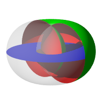

| POV-Ray for Unix version 3.8 | ||||
|
|
||||
| Home | POV-Ray for Unix | POV-Ray Tutorial | POV-Ray Reference | |
3.5 The Object Zoo
Quick Links:
3.5.1 Object
Objects are the building blocks of your scene. There are a lot of different types of objects supported by POV-Ray. In the following sections, we describe Finite Solid Primitives, Finite Patch Primitives and Infinite Solid Primitives. These primitive shapes may be combined into complex shapes using Constructive Solid Geometry (also known as CSG).
The basic syntax of an object is a keyword describing its type, some floats, vectors or other parameters which further define its location and/or shape and some optional object modifiers such as texture, interior_texture, pigment, normal, finish, interior, bounding, clipping or transformations. Specifically the syntax is:
OBJECT:
FINITE_SOLID_OBJECT | FINITE_PATCH_OBJECT |
INFINITE_SOLID_OBJECT | CSG_OBJECT | LIGHT_SOURCE |
object { OBJECT_IDENTIFIER [OBJECT_MODIFIERS...] }
FINITE_SOLID_OBJECT:
BLOB | BOX | CONE | CYLINDER | HEIGHT_FIELD | ISOSURFACE | JULIA_FRACTAL |
LATHE | OVUS | PARAMETRIC | PRISM | SPHERE | SPHERE_SWEEP | SUPERELLIPSOID |
SOR | TEXT | TORUS
FINITE_PATCH_OBJECT:
BICUBIC_PATCH | DISC | MESH | MESH2 | POLYGON | TRIANGLE |
SMOOTH_TRIANGLE
INFINITE_SOLID_OBJECT:
PLANE | POLY | CUBIC | QUARTIC | QUADRIC
CSG_OBJECT:
UNION | INTERSECTION | DIFFERENCE | MERGE
Object identifiers may be declared to make scene files more readable and to parameterize scenes so that changing a single declaration changes many values. An identifier is declared as follows.
OBJECT_DECLARATION: #declare IDENTIFIER = OBJECT | #local IDENTIFIER = OBJECT
Where IDENTIFIER is the name of the identifier up to 40
characters long and OBJECT is any valid object. To invoke
an object identifier, you wrap it in an object{...} statement.
You use the object statement regardless of what type of object
it originally was. Although early versions of POV-Ray required this
object wrapper all of the time, now it is only used with
OBJECT_IDENTIFIERS.
Object modifiers are covered in detail later. However here is a brief overview.
The texture describes the surface properties of the object. Complete details are in textures. Textures are combinations of pigments, normals, and finishes. In the section pigment you will learn how to specify the color or pattern of colors inherent in the material. In normal, we describe a method of simulating various patterns of bumps, dents, ripples or waves by modifying the surface normal vector. The section on finish describes the reflective properties of the surface. The Interior is a feature introduced in POV-Ray 3.1. It contains information about the interior of the object which was formerly contained in the finish and halo parts of a texture. Interior items are no longer part of the texture. Instead, they attach directly to the objects. The halo feature has been discontinued and replaced with a new feature called Media which replaces both halo and atmosphere.
Bounding shapes are finite, invisible shapes which wrap around complex, slow rendering shapes in order to speed up rendering time. Clipping shapes are used to cut away parts of shapes to expose a hollow interior. Transformations tell the ray-tracer how to move, size or rotate the shape and/or the texture in the scene.
3.5.1.1 Finite Solid Primitives
There are seventeen different solid finite primitive shapes: blob, box, cone, cylinder, height field, isosurface, Julia fractal, lathe, ovus, parametric, prism, sphere, sphere_sweep, superellipsoid, surface of revolution, text and torus. These have a well-defined inside and can be used in CSG: see Constructive Solid Geometry. They are finite and respond to automatic bounding. You may specify an interior for these objects.
3.5.1.1.1 Blob
Blobs are an interesting and flexible object type. Mathematically they are iso-surfaces of scalar fields, i.e. their surface is defined by the strength of the field in each point. If this strength is equal to a threshold value you are on the surface otherwise you are not.
Picture each blob component as an object floating in space. This object is filled with a field that has its maximum at the center of the object and drops off to zero at the object's surface. The field strength of all those components are added together to form the field of the blob. Now POV-Ray looks for points where this field has a given value, the threshold value. All these points form the surface of the blob object. Points with a greater field value than the threshold value are considered to be inside while points with a smaller field value are outside.
There's another, simpler way of looking at blobs. They can be seen as a union of flexible components that attract or repel each other to form a blobby organic looking shape. The components' surfaces actually stretch out smoothly and connect as if they were made of honey or something similar.
The syntax for blob is defined as follows:
BLOB:
blob { BLOB_ITEM... [BLOB_MODIFIERS...]}
BLOB_ITEM:
sphere{<Center>, Radius,
[ strength ] Strength[COMPONENT_MODIFIER...] } |
cylinder{<End1>, <End2>, Radius,
[ strength ] Strength [COMPONENT_MODIFIER...] } |
component Strength, Radius, <Center> |
threshold Amount
COMPONENT_MODIFIER:
TEXTURE | PIGMENT | NORMAL | FINISH | TRANSFORMATION
BLOB_MODIFIER:
hierarchy [Boolean] | sturm [Boolean] | OBJECT_MODIFIER
Blob default values:
hierarchy : on sturm : off threshold : 1.0
The threshold keyword is followed by a float value which determines the total field strength value that POV-Ray is looking for. The default value if none is specified is threshold 1.0. By following the ray out into space and looking at how each blob component affects the ray, POV-Ray will find the points in space where the field strength is equal to the threshold value. The following list shows some things you should know about the threshold value.
- The threshold value must be positive.
- A component disappears if the threshold value is greater than its strength.
- As the threshold value gets larger, the surface you see gets closer to the centers of the components.
- As the threshold value gets smaller, the surface you see gets closer to the surface of the components.
Cylindrical components are specified by a cylinder statement. The center of the end-caps of the cylinder is defined by the vectors <End1> and <End2>. Next is the float value of the Radius followed by the float Strength. These vectors and floats are required and should be separated
by commas. The keyword strength may optionally precede the strength value. The cylinder has hemispherical caps at each end.
Spherical components are specified by a sphere statement. The location is defined by the vector <Center>. Next is the float value of the Radius followed by the float
Strength. These vector and float values are required and should be separated by commas. The keyword strength may optionally precede the strength value.
You usually will apply a single texture to the entire blob object, and you typically use transformations to change its size, location, and orientation. However both the cylinder and sphere statements may have individual texture, pigment, normal, finish, and transformations applied to them. You may not apply separate interior statements to the components but you may specify one for the entire blob.
Note: By unevenly scaling a spherical component you can create ellipsoidal components. The tutorial section on Blob Object illustrates individually textured blob components and many other blob examples.
The component keyword is an obsolete method for specifying a spherical component and is only used for compatibility with earlier POV-Ray versions. It may not have textures or transformations individually applied to it.
The strength parameter of either type of blob component is a float value specifying the field strength at the center of the object. The strength may be positive or negative. A positive value will make that component attract other components while a negative value will make it repel other components. Components in different, separate blob shapes do not affect each other.
You should keep the following things in mind.
- The strength value may be positive or negative. Zero is a bad value, as the net result is that no field was added -- you might just as well have not used this component.
- If strength is positive, then POV-Ray will add the component's field to the space around the center of the component. If this adds enough field strength to be greater than the threshold value you will see a surface.
- If the strength value is negative, then POV-Ray will subtract the component's field from the space around the center of the component. This will only do something if there happen to be positive components nearby. The surface around any nearby positive components will be dented away from the center of the negative component.
After all components and the optional threshold value have been specified you may specify zero or more blob modifiers. A blob modifier is any regular object modifier or the hierarchy or
sturm keywords.
The components of each blob object are internally bounded by a spherical bounding hierarchy to speed up blob intersection tests and other operations. Using the optional keyword hierarchy followed by an optional boolean float value will turn it off or on. By default it is on.
If additional accuracy is required you can add the sturm object modifier.
An example of a three component blob is:
BLOB:
blob {
threshold 0.6
sphere { <.75, 0, 0>, 1, 1 }
sphere { <-.375, .64952, 0>, 1, 1 }
sphere { <-.375, -.64952, 0>, 1, 1 }
scale 2
}
If you have a single blob component then the surface you see will just look like the object used, i.e. a sphere or a cylinder, with the surface being somewhere inside the surface specified for the component. The exact surface location can be determined from the blob equation listed below (you will probably never need to know this, blobs are more for visual appeal than for exact modeling).
For the more mathematically minded, here's the formula used internally by POV-Ray to create blobs. You do not need to understand this to use blobs. The density of the blob field of a single component is:

|
|
Blob Density |
Where distance is the distance of a given point from the spherical blob's center or cylinder blob's axis. This formula has a convenient property that it is exactly equal to the strength parameter at the center of the component and drops off to exactly 0 at a distance from the center of the component that is equal to the radius value. The density formula for more than one blob component is just the sum of the individual component densities.
3.5.1.1.2 Box
A simple box can be defined by listing two corners of the box using the
following syntax for a box statement:
BOX:
box {
<Corner_1>, <Corner_2>
[OBJECT_MODIFIERS...]
}

|
|
The geometry of a box. |
Where <Corner_1> and
<Corner_2> are vectors defining the x, y, z coordinates of
the opposite corners of the box.
Note: All boxes are defined with their faces parallel to the coordinate axes. They may later be rotated to any orientation using the rotate keyword.
Boxes are calculated efficiently and make good bounding shapes (if manually bounding seems to be necessary).
3.5.1.1.3 Cone
The cone statement creates a finite length cone or a
frustum (a cone with the point cut off). The syntax is:
CONE:
cone {
<Base_Point>, Base_Radius, <Cap_Point>, Cap_Radius
[ open ][OBJECT_MODIFIERS...]
}

|
|
The geometry of a cone. |
Where <Base_Point> and <
Cap_Point> are vectors defining the x, y, z coordinates of the
center of the cone's base and cap and Base_Radius
and Cap_Radius are float values for the corresponding
radii.
Normally the ends of a cone are closed by flat discs that are parallel to
each other and perpendicular to the length of the cone. Adding the optional
keyword open after Cap_Radius will remove
the end caps and results in a tapered hollow tube like a megaphone or
funnel.
3.5.1.1.4 Cylinder
The cylinder statement creates a finite length cylinder with
parallel end caps The syntax is:
CYLINDER:
cylinder {
<Base_Point>, <Cap_Point>, Radius
[ open ][OBJECT_MODIFIERS...]
}

|
|
The geometry of a cylinder. |
Where <Base_Point> and
<Cap_Point> are vectors defining the x, y, z coordinates of
the cylinder's base and cap and Radius is a float
value for the radius.
Normally the ends of a cylinder are closed by flat discs that are parallel
to each other and perpendicular to the length of the cylinder. Adding the
optional keyword open after the radius will remove the end caps
and results in a hollow tube.
3.5.1.1.5 Height Field
Height fields are fast, efficient objects that are generally used to
create mountains or other raised surfaces out of hundreds of triangles in a
mesh. The height_field statement syntax is:
HEIGHT_FIELD:
height_field {
[HF_TYPE] "filename" [gamma GAMMA] [premultiplied BOOL] | [HF_FUNCTION]
[HF_MODIFIER...]
[OBJECT_MODIFIER...]
}
HF_TYPE:
exr | gif | hdr | jpeg | pgm | png | pot | ppm | sys | tga | tiff
GAMMA:
Float_Value | srgb | bt709 | bt2020
HF_FUNCTION:
function FieldResolution_X, FieldResolution_Y { UserDefined_Function }
HF_MODIFIER:
smooth & water_level Level
OBJECT_MODIFIER:
hierarchy [Boolean]
Height_field default values:
hierarchy : on smooth : off water_level : 0.0
A height field is essentially a one unit wide by one unit long square with a mountainous surface on top. The height of the mountain at each point is taken from the color number or palette index of the pixels in a graphic image file. The maximum height is one, which corresponds to the maximum possible color or palette index value in the image file.

|
|
The size and orientation of an unscaled height field. |
The mesh of triangles corresponds directly to the pixels in the image
file. Each square formed by four neighboring pixels is divided into two
triangles. An image with a resolution of N*M pixels has
(N-1)*(M-1) squares that are divided into
2*(N-1)*(M-1) triangles.

|
|
Relationship of pixels and triangles in a height field. |
The resolution of the height field is influenced by two factors: the resolution of the image and the resolution of the color/index values. The size of the image determines the resolution in the x- and z-direction. A larger image uses more triangles and looks smoother. The resolution of the color/index value determines the resolution along the y-axis. A height field made from an 8-bit image can have 256 different height levels while one made from a 16-bit image can have up to 65536 different height levels. Thus the second height field will look much smoother in the y-direction if the height field is created appropriately.
The size/resolution of the image does not affect the size of the height field. The unscaled height field size will always be 1 by 1 by 1. Higher resolution image files will create smaller triangles, not larger height fields.
The image file type used to create a height field is specified by one of the keywords listed above. Specifying the file type is optional. If it is not defined the same file type will be assumed as the one that is set as the output file type. This is useful when the source for the height_field is also generated with POV-Ray.
The GIF, PNG, PGM, TIFF and possibly SYS format files are the only ones that can be created using a standard paint program. Though there are paint programs for creating TGA image files they will not be of much use for creating the special 16 bit TGA files used by POV-Ray (see below and HF_Gray_16 for more details).
In an image file that uses a color palette, like GIF, the color number is the palette index at a given pixel. Use a paint program to look at the palette of a GIF image. The first color is palette index zero, the second is index one, the third is index two and so on. The last palette entry is index 255. Portions of the image that use low palette entries will result in lower parts of the height field. Portions of the image that use higher palette entries will result in higher parts of the height field.
Height fields created from GIF files can only have 256 different height levels because the maximum number of colors in a GIF file is 256.
The color of the palette entry does not affect the height of the pixel. Color entry 0 could be red, blue, black or orange but the height of any pixel that uses color entry 0 will always be 0. Color entry 255 could be indigo, hot pink, white or sky blue but the height of any pixel that uses color entry 255 will always be 1.
You can create height field GIF images with a paint program or a fractal program like Fractint.
A POT file is essentially a GIF file with a 16 bit palette. The maximum number of colors in a POT file is 65536. This means a POT height field can have up to 65536 possible height values. This makes it possible to have much smoother height fields.
Note: The maximum height of the field is still 1 even though more intermediate values are possible.
At the time of this writing the only program that created POT files was a freeware MS-Dos/Windows program called Fractint. POT files generated with this fractal program create fantastic landscapes.
The TGA and PPM file formats may be used as a storage device for 16 bit numbers rather than an image file. These formats use the red and green bytes of each pixel to store the high and low bytes of a height value. These files are as smooth as POT files but they must be generated with special custom-made programs. Several programs can create TGA heightfields in the format POV uses, such as Gforge and Terrain Maker.
PNG format heightfields are usually stored in the form of a grayscale image with black corresponding to lower and white to higher parts of the height field. Because PNG files can store up to 16 bits in grayscale images they will be as smooth as TGA and PPM images. Since they are grayscale images you will be able to view them with a regular image viewer. Gforge can create 16-bit heightfields in PNG format. Color PNG images will be used in the same way as TGA and PPM images.
SYS format is a platform specific file format. See your platform specific documentation for details.
In addition to all the usual object modifiers, there are three additional height field modifiers available.
The optional water_level parameter may be added after the file
name. It consists of the keyword water_level followed by a
float value telling the program to ignore parts of the height field below
that value. The default value is zero and legal values are between zero and
one. For example water_level 0.5 tells POV-Ray to only render
the top half of the height field. The other half is below the water
and could not be seen anyway. Using water_level renders
faster than cutting off the lower part using CSG or clipping. This term comes
from the popular use of height fields to render landscapes. A height field
would be used to create islands and another shape would be used to simulate
water around the islands. A large portion of the height field would be
obscured by the water so the water_level parameter was
introduced to allow the ray-tracer to ignore the unseen parts of the height
field. water_level is also used to cut away unwanted lower
values in a height field. For example if you have an image of a fractal on a
solid colored background, where the background color is palette entry 0, you
can remove the background in the height field by specifying,
water_level 0.001.
Normally height fields have a rough, jagged look because they are made of
lots of flat triangles. Adding the keyword smooth causes
POV-Ray to modify the surface normal vectors of the triangles in such a way
that the lighting and shading of the triangles will give a smooth look. This
may allow you to use a lower resolution file for your height field than would
otherwise be needed. However, smooth triangles will take longer to render.
The default value is off.
In order to speed up the intersection tests a one-level bounding hierarchy
is available. By default it is always used but it can be switched off using
hierarchy off to improve the rendering speed for small height
fields (i.e. low resolution images). You may optionally use a boolean value
such as hierarchy on or hierarchy off.
While POV-Ray will normally interpret the height field input file as a container of linear data irregardless of file type, this can be overridden for any individual height field input file by specifying gamma GAMMA immediately after the file name. For example:
height field {
jpeg "foobar.jpg" gamma 1.8
}
This will cause POV-Ray to perform gamma adjustment or decoding on the input file data before building the height field. Alternatively to a numerical value, srgb may be specified to denote that the file format is pre-corrected or encoded using the ''sRGB transfer function'' instead of a power-law gamma function. New in version 3.8, other valid special values are bt709 and bt2020, denoting that the file is encoded or pre-corrected using the ITU-R BT.709 or BT.2020 transfer function, respectively. See section Gamma Handling for more details.
The height field object also allows for substituting a user defined function instead of specifying an image. That function can either be in it's literal form, or it can be a call to a function that you have predeclared. The user supplied parameters FieldResolution_X and FieldResolution_Y are integer values that affect the resolution of the color/index values, not size of the unscaled height field.
3.5.1.1.6 Isosurface
See the isosurface tutorial for more about working with isosurfaces.
New in version 3.8 a potential pattern has been added to define a pattern based on the potential field of a blob or isosurface object. See also: Potential Pattern.
The syntax basics are as follows:
isosurface {
function { FUNCTION_ITEMS }
[contained_by { SPHERE | BOX }]
[threshold FLOAT_VALUE]
[accuracy FLOAT_VALUE]
[max_gradient FLOAT_VALUE]
[evaluate P0, P1, P2]
[open]
[max_trace INTEGER] | [all_intersections]
[polarity on | +VALUE | off | -VALUE]
[OBJECT_MODIFIERS...]
}
Isosurface default values:
contained_by : box{-1,1}
threshold : 0.0
accuracy : 0.001
max_gradient : 1.1
polarity : off
Since isosurfaces are defined by a user supplied function { ... } it must be specified as the first item of the isosurface statement. Here you place all the mathematical functions that will describe the surface.
The contained_by object limits the area where POV-Ray samples for the surface of the function. This container can either be a sphere or a box both of which use the standard POV-Ray syntax. If nothing is specified a default box, as noted above, will be used. See additional usage examples below:
contained_by { sphere { CENTER, RADIUS } }
contained_by { box { CORNER1, CORNER2 } }
Using threshold specifies how much strength, or substance to give the isosurface. The surface appears where the function value equals the threshold value. See above for the listed default value.
The isosurface resolver uses a recursive subdivision method. This subdivision goes on until the length of the interval where POV-Ray finds a surface point is less than the specified accuracy. See above for the listed default value. Be aware that smaller values produce more accurate surfaces, but takes longer to render.
POV-Ray can find the first intersecting point between a ray and the isosurface of any continuous function if the maximum gradient of the function is known. To that end you can specify a max_gradient for the function. See above for the listed default value. When the max_gradient used to find the intersecting point is too high, the render slows down considerably. Conversely, when it is too low, artifacts or holes may appear on the isosurface, and in some cases when it is way too low, the surface does not show at all. While rendering the isosurface POV-Ray stores the found gradient values and issues a warning, if these values are either higher or much lower than the specified max_gradient value:
Warning: The maximum gradient found was 5.257, but max_gradient of the isosurface was set to 5.000. The isosurface may contain holes! Adjust max_gradient to get a proper rendering of the isosurface.
Warning: The maximum gradient found was 5.257, but max_gradient of the isosurface was set to 7.000. Adjust max_gradient to get a faster rendering of the isosurface.
For best performance you should specify a value close to the real maximum gradient.
Isosurfaces can also dynamically adapt the used max_gradient. To activate this technique you have to specify the evaluate keyword followed by these three parameters:
- P0: the minimum
max_gradientin the estimation process. - P1: an over-estimating factor. That is, the
max_gradientis multiplied by the P1 parameter. - P2: an attenuation parameter of 1 or less
In this case POV-Ray starts with the max_gradient value P0 and dynamically changes it during the render using P1 and P2. In the evaluation process, the P1 and P2 parameters are used in
quadratic functions. This means that over-estimation increases more rapidly with higher values and attenuates more rapidly with lower values. It should also be noted that when using dynamic max_gradient, there can be artifacts or holes.
If you are unsure what values to use, just start a render without using evaluate to get a value for the max_gradient, then use that value with evaluate like this:
- P0:
max_gradient * Min_Factor - P1:
sqrt(max_gradient/(max_gradient * Min_Factor)) - P2: should be 1 or less use 0.7 as a good starting point.
Where Min_Factor is a float between 0 and 1 to reduce the max_gradient to a minimum max_gradient. The ideal value for P0 would be the average of the found maximum gradients, but we do not
have access to that information. A good starting point for Min_Factor is 0.6
If there are artifacts or holes in the isosurface, you can just increase Min_Factor and / or P2. For Example: when the first run gives a found max_gradient of 356, start with:
#declare Min_factor= 0.6;
isosurface {
...
evaluate 356*Min_factor, sqrt(356/(356*Min_factor)), 0.7
//evaluate 213.6, 1.29, 0.7
...
}
This method is only an approximation of what happens internally, but it gives faster rendering speeds with the majority of isosurfaces.
When the isosurface is not fully contained within the contained_by object, there will be a cross section. When this happens, you will see the surface of the container. Using the open keyword, these cross section surfaces are removed, and the inside of the isosurface becomes visible.
Note: Using open slows down the render speed, and it is not recommended for use with CSG operations.
Isosurfaces can be used in CSG shapes since they are solid finite objects - if not finite by themselves, they are through the cross section with the container. By default POV-Ray searches only for the first surface which the ray intersects. However, when using an isosurface in CSG operations, the other surfaces must also be found. Consequently, the keyword max_trace followed by an integer value, must be added to the isosurface statement. To check for all surfaces, use the keyword all_intersections instead. With max_trace it only checks until that number is reached.
Note: The current implementation has a limit of 10 intersections in all cases.
By default, the inside of an isosurface is defined as the set of all points inside the contained_by shape where the function values are below the threshold. New in version 3.8 this can be changed via the polarity keyword. Specifying a positive setting or on will instead cause function values above the threshold to be considered inside. Specifying a negative setting or off will give the default behavior.
3.5.1.1.7 Julia Fractal
A julia fractal object is a 3-D slice of a 4-D object
created by generalizing the process used to create the classic Julia sets.
You can make a wide variety of strange objects using the
julia_fractal statement including some that look like bizarre blobs of
twisted taffy. The julia_fractal syntax is:
JULIA_FRACTAL:
julia_fractal {
<4D_Julia_Parameter>
[JF_ITEM...] [OBJECT_MODIFIER...]
}
JF_ITEM:
ALGEBRA_TYPE | FUNCTION_TYPE | max_iteration Count |
precision Amt | slice <4D_Normal>, Distance
ALGEBRA_TYPE:
quaternion | hypercomplex
FUNCTION_TYPE:
QUATERNATION:
sqr | cube
HYPERCOMPLEX:
sqr | cube | exp | reciprocal | sin | asin | sinh |
asinh | cos | acos | cosh | acosh | tan | atan |tanh |
atanh | ln | pwr( X_Val, Y_Val )
Julia Fractal default values:
ALGEBRA_TYPE : quaternion FUNCTION_TYPE : sqr max_iteration : 20 precision : 20 slice, DISTANCE : <0,0,0,1>, 0.0
The required 4-D vector <4D_Julia_Parameter>
is the classic Julia parameter p in the iterated
formula f(h) + p. The julia fractal object is
calculated by using an algorithm that determines whether an arbitrary point
h(0) in 4-D space is inside or outside the object. The
algorithm requires generating the sequence of vectors h(0), h(1),
... by iterating the formula h(n+1) = f(h(n)) + p (n =
0, 1, ..., max_iteration-1) where p is the
fixed 4-D vector parameter of the julia fractal and f()
is one of the functions sqr, cube, ... specified
by the presence of the corresponding keyword. The point
h(0) that begins the sequence is considered inside the julia
fractal object if none of the vectors in the sequence escapes a hypersphere
of radius 4 about the origin before the iteration number reaches the integer
max_iteration value. As you increase max_iteration,
some points escape that did not previously escape, forming the julia fractal.
Depending on the <4D_Julia_Parameter>, the julia
fractal object is not necessarily connected; it may be scattered fractal
dust. Using a low max_iteration can fuse together the dust to
make a solid object. A high max_iteration is more accurate but
slows rendering. Even though it is not accurate, the solid shapes you get
with a low max_iteration value can be quite interesting. If
none is specified, the default is max_iteration 20.
Since the mathematical object described by this algorithm is four-dimensional
and POV-Ray renders three dimensional objects, there must be a way to reduce
the number of dimensions of the object from four dimensions to three. This is
accomplished by intersecting the 4-D fractal with a 3-D plane defined by the slice modifier and then projecting the
intersection to 3-D space. The keyword is followed by 4-D vector and a float
separated by a comma. The slice plane is the 3-D space that is perpendicular
to <4D_Normal> and is
Distance units from the origin. Zero length
<4D_Normal> vectors or a
<4D_Normal> vector with a zero fourth component are
illegal. If none is specified, the default is slice
<0,0,0,1>,0.
You can get a good feel for the four dimensional nature of a julia fractal by
using POV-Ray's animation feature to vary a slice's
Distance parameter. You can make the julia fractal appear from
nothing, grow, then shrink to nothing as
Distance changes, much as the cross section of a 3-D object
changes as it passes through a plane.
The precision parameter is a tolerance used in the
determination of whether points are inside or outside the fractal object.
Larger values give more accurate results but slower rendering. Use as low a
value as you can without visibly degrading the fractal object's
appearance but note values less than 1.0 are clipped at 1.0. The default if
none is specified is precision 20.
The presence of the keywords quaternion or
hypercomplex determine which 4-D algebra is used to calculate the
fractal. The default is quaternion. Both are 4-D generalizations
of the complex numbers but neither satisfies all the field properties (all
the properties of real and complex numbers that many of us slept through in
high school). Quaternions have non-commutative multiplication and
hypercomplex numbers can fail to have a multiplicative inverse for some
non-zero elements (it has been proved that you cannot successfully generalize
complex numbers to four dimensions with all the field properties intact, so
something has to break). Both of these algebras were discovered in the 19th
century. Of the two, the quaternions are much better known, but one can argue
that hypercomplex numbers are more useful for our purposes, since complex
valued functions such as sin, cos, etc. can be generalized to work for
hypercomplex numbers in a uniform way.
For the mathematically curious, the algebraic properties of these two algebras can be derived from the multiplication properties of the unit basis vectors 1 = <1,0,0,0>, i=< 0,1,0,0>, j=<0,0,1,0> and k=< 0,0,0,1>. In both algebras 1 x = x 1 = x for any x (1 is the multiplicative identity). The basis vectors 1 and i behave exactly like the familiar complex numbers 1 and i in both algebras.
ij = k |
jk = i |
ki = j |
ji = -k |
kj = -i |
ik = -j |
ii = jj = kk = -1 |
ijk = -1 |
ij = k |
jk = -i |
ki = -j |
ji = k |
kj = -i |
ik = -j |
ii = jj = kk = -1 |
ijk = 1 |
A distance estimation calculation is used with the quaternion calculations to speed them up. The proof that this distance estimation formula works does not generalize from two to four dimensions but the formula seems to work well anyway, the absence of proof notwithstanding!
The presence of one of the function keywords sqr,
cube, etc. determines which function is used for
f(h) in the iteration formula h(n+1) = f(h(n)) +
p. The default is sqr. Most of the function keywords
work only if the hypercomplex keyword is present. Only
sqr and cube work with quaternion. The
functions are all familiar complex functions generalized to four dimensions.
Function Keyword Maps 4-D value h to:
sqr |
h*h |
cube |
h*h*h |
exp |
e raised to the power h |
reciprocal |
1/h |
sin |
sine of h |
asin |
arcsine of h |
sinh |
hyperbolic sine of h |
asinh |
inverse hyperbolic sine of h |
cos |
cosine of h |
acos |
arccosine of h |
cosh |
hyperbolic cos of h |
acosh |
inverse hyperbolic cosine of h |
tan |
tangent of h |
atan |
arctangent of h |
tanh |
hyperbolic tangent of h |
atanh |
inverse hyperbolic tangent of h |
ln |
natural logarithm of h |
pwr(x,y) |
h raised to the complex power x+iy |
A simple example of a julia fractal object is:
julia_fractal {
<-0.083,0.0,-0.83,-0.025>
quaternion
sqr
max_iteration 8
precision 15
}
The first renderings of julia fractals using quaternions were done by Alan Norton and later by John Hart in the '80's. This POV-Ray implementation follows Fractint in pushing beyond what is known in the literature by using hypercomplex numbers and by generalizing the iterating formula to use a variety of transcendental functions instead of just the classic Mandelbrot z2 + c formula. With an extra two dimensions and eighteen functions to work with, intrepid explorers should be able to locate some new fractal beasts in hyperspace, so have at it!
3.5.1.1.8 Lathe
The lathe is an object generated from rotating a two-dimensional curve about an axis. This curve is defined by a set of points which are connected by linear, quadratic, cubic or bezier spline curves. The syntax is:
LATHE:
lathe {
[SPLINE_TYPE] Number_Of_Points, <Point_1>
<Point_2>... <Point_n>
[LATHE_MODIFIER...]
}
SPLINE_TYPE:
linear_spline | quadratic_spline | cubic_spline | bezier_spline
LATHE_MODIFIER:
sturm | OBJECT_MODIFIER
Lathe default values:
SPLINE_TYPE : linear_spline sturm : off
The first item is a keyword specifying the type of spline. The default if none is specified is linear_spline. The required integer value Number_Of_Points specifies how many two-dimensional points are used to define the curve. The points follow and are specified by 2-D vectors. The curve is not automatically closed, i.e. the first and last
points are not automatically connected. You will have to do this yourself if you want a closed curve. The curve thus defined is rotated about the y-axis to form the lathe object, centered at the origin.
The following example creates a simple lathe object that looks like a thick cylinder, i.e. a cylinder with a thick wall:
lathe {
linear_spline
5,
<2, 0>, <3, 0>, <3, 5>, <2, 5>, <2, 0>
pigment {Red}
}
The cylinder has an inner radius of 2 and an outer radius of 3, giving a wall width of 1. It's height is 5 and it's located at the origin pointing up, i.e. the rotation axis is the y-axis.
Note: The first and last point are equal to get a closed curve.
The splines that are used by the lathe and prism objects are a little bit difficult to understand. The basic concept of splines is to draw a curve through a given set of points in a determined way. The default linear_spline is the simplest spline because it's nothing more than connecting consecutive points with a line. This means the curve that is drawn between two points only depends on those two points. No additional information is taken into account. The other splines are different in that they do take other points into account when connecting two points. This creates a smooth curve and, in the case of the cubic spline, produces smoother transitions at each point.
The quadratic_spline keyword creates splines that are made of quadratic curves. Each of them connects two consecutive points. Since those two points (call them second and third point) are not sufficient to describe a quadratic curve, the predecessor of the second point is taken into account when the curve is drawn. Mathematically, the relationship (their relative locations on the 2-D plane) between the first and second point determines the slope of the curve at the second point. The slope of the curve at the third point is out of control. Thus quadratic splines look much smoother than linear splines but
the transitions at each point are generally not smooth because the slopes on both sides of the point are different.
The cubic_spline keyword creates splines which overcome the transition problem of quadratic splines because they also take a fourth point into account when drawing the curve between the second and third point. The slope at the fourth point is under control now and allows a smooth transition at each point. Thus cubic splines produce the most flexible and
smooth curves.
The bezier_spline is an alternate kind of cubic spline. Points 1 and 4 specify the end points of a segment and points 2 and 3 are control points which specify the slope at the endpoints. Points 2 and 3 do not actually lie on the spline. They adjust the slope of the spline. If you draw an imaginary line between point 1 and 2, it represents the slope at point 1.
It is a line tangent to the curve at point 1. The greater the distance between 1 and 2, the flatter the curve. With a short tangent the spline can bend more. The same holds true for control point 3 and endpoint 4. If you want the spline to be smooth between segments, points 3 and 4 on one segment and points 1 and 2 on the next segment must form a straight line and point 4 of one segment must be the same as point 1 on the next segment.
You should note that the number of spline segments, i. e. curves between two points, depends on the spline type used. For linear splines you get n-1 segments connecting the points P[i], i=1,...,n. A quadratic spline gives you n-2 segments because the last point is only used for determining the slope, as explained above (thus you will need at least three points to define a quadratic spline). The same holds for cubic splines where you get n-3 segments with the first and last point used only for slope calculations (thus needing at least four points). The bezier spline requires 4 points per segment, creating n/4 segments.
If you want to get a closed quadratic and cubic spline with smooth transitions at the end points you have to make sure that in the cubic case P[n-1] = P[2] (to get a closed curve), P[n] = P[3] and P[n-2] = P[1] (to smooth the transition). In the quadratic case P[n-1] = P[1] (to close the curve) and P[n] = P[2].
The surface normal determination for lathes depends upon the order in which the splines points are specified. For interior_texture to work as expected, the outline of the underlying 2D shape must be specified in counter-clockwise order, except for holes which must be specified in clockwise order, and they must not self-intersect.
The following code will render with the color Red on the outside and the color Blue on the inside.
#declare Lathe_InitialOrder = lathe {
bezier_spline
16,
<0.45,0>,<0.45,0.0828427>,<0.382843,0.15>,<0.3,0.15>
<0.3,0.15>,<0.217157,0.15>,<0.15,0.0828427>,<0.15,0>
<0.15,0>,<0.15,-0.0828427>,<0.217157,-0.15>,<0.3,-0.15>
<0.3,-0.15>,<0.382843,-0.15>,<0.45,-0.0828427>,<0.45,0>
sturm
texture { pigment { Red } }
interior_texture { pigment { Blue } }
}
While the following example will render inside-out, with the color Blue on the outside and the color Red on the inside.
#declare Lathe_ReverseOrder = lathe {
bezier_spline
16,
<0.45,0>,<0.45,-0.0828427>,<0.382843,-0.15>,<0.3,-0.15>
<0.3,-0.15>,<0.217157,-0.15>,<0.15,-0.0828427>,<0.15,0>
<0.15,0>,<0.15,0.0828427>,<0.217157,0.15>,<0.3,0.15>
<0.3,0.15>,<0.382843,0.15>,<0.45,0.0828427>,<0.45,0>
sturm
texture { pigment { Red } }
interior_texture { pigment { Blue } }
}
The actual normal determination is more complicated for complex splines. If the surface normal is important to the visual result, it is best to check how the lathe is being rendered by testing with substantially different inside and outside textures.
Note: With the bezier spline, unlike all the other spline types used with the lathe, it is possible to create independent closed curves within a single lathe definition.
If additional accuracy is required you can add the sturm object modifier.
3.5.1.1.9 Lemon
|
New to version 3.8 the
|
|
|
example lemon objects |
Note: The minimal Inner_Radius value is defined as: sqrt ( Radius2 + ( DistanceBetweenEndPoints/2 )2 )
The syntax is as follows:
lemon {
<Base_Point>, Base_Radius, <Cap_Point>, Cap_Radius, Inner_Radius
[LEMON_MODIFIERS]
}
LEMON_MODIFIERS:
sturm | open | OBJECT_MODIFIER
The following example produced the above image:
#version 3.8;
global_settings { assumed_gamma 1.0 }
camera {
location -560*z
direction z
up y
rotate x*20
right image_width*x/image_height
angle 5
}
#include "colors.inc"
#macro LightSource (LightColor)
light_source { <0,0,-200>, LightColor area_light x*15, z*15 20,20 adaptive 1 jitter orient circular }
#end
background { White }
plane { y,-20 pigment { White } }
object { LightSource (1.0) rotate x*40 }
object { LightSource (0.8) rotate x*-40 rotate y*330 }
object { LightSource (1.2) rotate x*80 rotate y*210 }
lemon { <0,-20,0>, 0, <0,20,0>, 0, 30
texture { pigment { color srgb <1,0,0> }}
translate x*-12
sturm
}
lemon { <0,0,0>, 5, <0,-20,0>, 0, 15
texture { pigment { color srgb <0,1,0> }}
translate y*10
translate <3,-10,-10>
sturm
}
lemon { <0,0,0>, 5, <0,-20,0>, 5, 15
open
texture { pigment { color srgb <0,0,1> }}
interior_texture { pigment { srgb <1,1,0> }}
translate y*10
translate <12,2,12>
sturm
}
If additional accuracy is required you can add the sturm object modifier.
See also the cone object.
3.5.1.1.10 Ovus
An ovus is a shape that looks like an egg. A Change in version 3.8 has extended the syntax of the ovus object by adding radius, distance and precision controls.
The syntax is as follows:
ovus {
Bottom_radius, Top_radius [radius Inner_radius] [distance Vertical_distance] [precision Root_tolerance]
[OBJECT_MODIFIERS...]
}
Where Bottom_radius is a float value giving the radius of the bottom sphere and Top_radius is a float specifying the radius of the top sphere. The top and bottom spheres are connected together with a suitably truncated lemon, or self intersection of a torus, that is automatically computed so as to provide the needed continuity to the shape. The distance is a float value that represents the length between the center of the two spheres, defaulting to Bottom_radius. The radius float value represents the inner circle of the connecting torus and it's default is twice the greater of either Top_radius or Bottom_radius. The precision float value is the tolerance used for the root solving of the connecting torus, and it's default is 1e-4. If additional accuracy is required you can now add the sturm object modifier.
 |
|
An ovus 2D section |
The ovus and it's constituent 3D shapes |
Note: According to the ratio of the radius, the pointy part is the smallest radius, but is not always on top!
 |
Evolution of ratio from 0 to 1.95 in 0.15 steps. |
See also: UV Mapping.
Note: See the following MathWorld references for more information about the math behind how the ovus object is constructed.
3.5.1.1.11 Parametric
While the isosurface object uses implicit surface functions like F(x,y,z) = 0 the parametric object uses is a set of equations for a surface expressed in the form of the parameters that locate points on the surface. For example: x(u,v), y(u,v), z(u,v). Each of the pairs of values for u and v gives a single point <x,y,z> in 3d space.
The parametric object is not a solid it is hollow, like a thin shell. The syntax is as follows:
parametric {
function { FUNCTION_ITEMS },
function { FUNCTION_ITEMS },
function { FUNCTION_ITEMS }
<u1,v1>, <u2,v2>
[contained_by { SPHERE | BOX }]
[max_gradient FLOAT_VALUE]
[accuracy FLOAT_VALUE]
[precompute DEPTH, VarList]
}
The default values are:
accuracy : 0.001
contained_by : box {<-1,-1,-1>, <1,1,1>}
- The first function calculates the
xvalue of the surface, the secondyand the third thezvalue. Any function that results in a float is allowed. - The
<u1,v1>and the<u2,v2>boundaries of the(u,v)space, in which the surface has to be calculated. - The
contained_byobject limits the area where POV-Ray samples for the surface of the function. The container can either be asphereor abox. - The
max_gradientis the maximum magnitude of all six partial derivatives over the specified ranges of u and v. - Take
dx/du,dx/dv,dy/du,dy/dv,dz/du, anddz/dvand calculate them over the entire range - The
max_gradientshould be at least the maximum (absolute value) of all of those values. - Choosing a too small of a value will create holes or artifacts in the object.
- For
accuracysmaller values produces more accurate surfaces, but take longer to render. - Using
precomputecan speedup the rendering of parametric surfaces by simply dividing the parametric surfaces into smaller ones - The maximum value for DEPTH is 20. High values of depth can produce arrays that use a lot of memory, take longer to parse and render.
- It precomputes the ranges for the VarList variables (x,y,z)
- If you declare a
parametricsurface usingprecomputeand then use it twice, all arrays are in memory only once.
Example, a unit sphere:
parametric {
function { sin(u)*cos(v) }
function { sin(u)*sin(v) }
function { cos(u) }
<0,0>, <2*pi,pi>
contained_by { sphere{0, 1.1} }
max_gradient ??
accuracy 0.0001
precompute 10 x,y,z
pigment {rgb 1}
}
3.5.1.1.12 Prism
The prism is an object generated by specifying one or more two-dimensional, closed curves in the x-z plane and sweeping them along y axis. These curves are defined by a set of points which are connected by linear, quadratic, cubic or bezier splines.
The syntax for the prism is:
PRISM:
prism {
[PRISM_ITEMS...] Height_1, Height_2, Number_Of_Points,
<Point_1>, <Point_2>, ... <Point_n>
[ open ] [PRISM_MODIFIERS...]
}
PRISM_ITEM:
linear_spline | quadratic_spline | cubic_spline |
bezier_spline | linear_sweep | conic_sweep
PRISM_MODIFIER:
sturm | OBJECT_MODIFIER
Prism default values:
SPLINE_TYPE : linear_spline SWEEP_TYPE : linear_sweep sturm : off
The first items specify the spline type and sweep type. The defaults if none is specified is linear_spline and linear_sweep. This is followed by two float values Height_1 and Height_2 which are the y
coordinates of the top and bottom of the prism. This is followed by a float value specifying the number of 2-D points you will use to define the prism.This includes all control points needed for quadratic, cubic and bezier splines. This is followed by the specified number of 2-D vectors which define the shape in the x-z plane.
The interpretation of the points depends on the spline type. The prism object allows you to use any number of sub-prisms inside one prism statement, they are of the same spline and sweep type. Wherever an even number of sub-prisms overlaps a hole appears.
Note: You need not have multiple sub-prisms and they need not overlap as in the following examples.
In the linear_spline the first point specified is the start of the first sub-prism. The following points are connected by straight lines. If you specify a value identical to the first point, this closes the sub-prism and next point starts a new one. When you specify the value of that sub-prism's start, then it is closed. Each of the sub-prisms has to be closed by repeating the first point of a sub-prism at the end of the sub-prism's point sequence.
In the following example, there are two rectangular sub-prisms nested inside each other to create a frame.
prism {
linear_spline
0, 1, 10,
<0,0>, <6,0>, <6,8>, <0,8>, <0,0>, //outer rim
<1,1>, <5,1>, <5,7>, <1,7>, <1,1> //inner rim
}
The last sub-prism of a linear spline prism is automatically closed, just like the last sub-polygon in the polygon statement, if the first and last point of the sub-polygon's point sequence are not the same. This makes it very easy to convert between polygons and prisms. Quadratic, cubic and bezier splines are never automatically closed.
In the quadratic_spline, each sub-prism needs an additional control point at the beginning of each sub-prisms point sequence to determine the slope at the start of the curve. The first point specified is the control point which is not actually part of the spline. The second point is the start of the spline. The sub-prism ends when this second point is duplicated. The next point is the control point of the next sub-prism. The point after that is the first point of the second sub-prism.
Here is an example:
prism {
quadratic_spline
0, 1, 12,
<1,-1>, <0,0>, <6,0>, //outer rim; <1,-1> is control point and
<6,8>, <0,8>, <0,0>, //<0,0> is first & last point
<2,0>, <1,1>, <5,1>, //inner rim; <2,0> is control point and
<5,7>, <1,7>, <1,1> //<1,1> is first & last point
}
In the cubic_spline, each sub-prism needs two additional control points, one at the beginning of each sub-prisms point sequence to determine the slope at the start of the curve and one at the end. The first point specified is the control point which is not actually part of the spline. The second point is the start of the spline. The sub-prism ends when this second point is duplicated. The next point is the control point of the end of the first sub-prism. Next is the beginning control point of the next sub-prism. The point after that is the first point of the second sub-prism.
Here is an example:
prism {
cubic_spline
0, 1, 14,
<1,-1>, <0,0>, <6,0>, //outer rim; First control is <1,-1> and
<6,8>, <0,8>, <0,0>, //<0,0> is first & last point.
<-1,1>, //Last control of first spline is <-1,1>
<2,0>, <1,1>, <5,1>, //inner rim; First control is <2,0> and
<5,7>, <1,7>, <1,1>, //<1,1> is first & last point
<0,2> //Last control of first spline is <0,2>
}
The bezier_spline is an alternate kind of cubic spline. Points 1 and 4 specify the end points of a segment and points 2 and 3 are control points which specify the slope at the endpoints. Points 2 and 3 do not actually lie on the spline. They adjust the slope of the spline. If you draw an imaginary line between point 1 and 2, it represents the slope at point 1. It is a line tangent to the curve at point 1. The greater the distance between 1 and 2, the flatter the curve. With a short tangent the spline can bend more. The same holds true for control point 3 and endpoint 4. If you want the spline to be smooth between segments, point 3 and 4 on one segment and point 1 and 2 on the next segment must form a straight line and point 4 of one segment must be the same as point one on the next segment.
By default linear sweeping is used to create the prism, that is, the prism's walls are perpendicular to the x-z plane. The size of the curve does not change during the sweep. You can also use conic_sweep that leads to a prism with cone-like walls by scaling the curve down during the sweep.
Like cylinders the prism is normally closed. You can remove the caps on the prism by using the open keyword. If you do, you should not use it in CSG operations, because the result may not be as expected.
The surface normal determination for prism sides depends upon the order in which the splines points are specified. Prism ends have normals which face outward at one end and inward at the other end. For interior_texture to work as expected, the outline of the underlying 2D shape must be specified in counter-clockwise order, except for holes which must be specified in clockwise order, and they must not self-intersect.
The following code will render sides with the color Red on the outside and the color Blue on the inside.
#declare Prism_InitialOrder = prism {
linear_spline
linear_sweep
0,1,5,
<0.5,-0.5>,<0.5,0.5>,<0.3,0.5>,<0.3,-0.5>,<0.5,-0.5>
texture { pigment { Red } }
interior_texture { pigment { Blue } }
}
While the following example will render sides inside-out with the color Blue on the outside and the color Red on the inside. Surface normals for the prism ends are unchanged.
#declare Prism_ReverseOrder = prism {
linear_spline
linear_sweep
0,1,5,
<0.5,-0.5>,<0.3,-0.5>,<0.3,0.5>,<0.5,0.5>,<0.5,-0.5>
texture { pigment { Red } }
interior_texture { pigment { Blue } }
}
The actual normal determination is more complicated for complex splines. If the surface normal is important to the visual result, it is best to check how the prism is being rendered by testing with substantially different inside and outside textures.
If additional accuracy is required you can add the sturm object modifier.
For an explanation of the spline concept read the description for the Lathe object.
3.5.1.1.13 Sphere
The syntax of the sphere object is:
SPHERE:
sphere {
<Center>, Radius
[OBJECT_MODIFIERS...]
}

|
|
The geometry of a sphere. |
Where <Center> is a vector specifying the x,
y, z coordinates of the center of the sphere and
Radius is a float value specifying the radius. Spheres may be
scaled unevenly giving an ellipsoid shape.
Because spheres are highly optimized they make good bounding shapes (if manual bounding seems to be necessary).
3.5.1.1.14 Sphere Sweep
The syntax of the sphere_sweep object is:
SPHERE_SWEEP:
sphere_sweep {
linear_spline | b_spline | cubic_spline
NUM_OF_SPHERES,
CENTER, RADIUS,
CENTER, RADIUS,
...
CENTER, RADIUS
[tolerance DEPTH_TOLERANCE]
[OBJECT_MODIFIERS]
}
Sphere_sweep default values:
tolerance : 1.0e-6 (0.000001)
A Sphere Sweep is the envelope of a moving sphere with varying radius, or, in other words, the
space a sphere occupies during its movement along a spline.
Sphere Sweeps are modeled by specifying a list of single spheres which are then interpolated.
Three kinds of interpolation are supported:
linear_spline: Interpolating the input data with a linear function, which means that the single spheres are connected by straight tubes.b_spline: Approximating the input data using a cubic b-spline function, which results in a curved object.cubic_spline: Approximating the input data using a cubic spline, which results in a curved object.
The sphere list (center and radius of each sphere) can take as many spheres as you like to describe
the object, but you will need at least two spheres for a linear_spline, and four spheres
for b_spline or cubic_spline.
Optional: The depth tolerance that should be used for the intersection calculations. This is done by
adding the tolerance keyword and the desired value: the default distance is
1.0e-6 (0.000001) and should do for most sphere sweep objects.
You should change this when you see dark spots on the surface of the object. These are probably
caused by an effect called self-shading. This means that the object casts shadows onto itself at some
points because of calculation errors. A ray tracing program usually defines the minimal distance a ray
must travel before it actually hits another (or the same) object to avoid this effect. If this distance is
chosen too small, self-shading may occur.
If so, specify tolerance 1.0e-4 or higher.
Note: If these dark spots remain after raising the tolerance, you might get rid of these spots by using adaptive super-sampling (method 2) for anti-aliasing. Images look better with anti-aliasing anyway.
Note: The merge CSG operation is not recommended with Sphere Sweeps: there could be a small gap between the merged objects!
3.5.1.1.15 Superquadric Ellipsoid
The superellipsoid object creates a shape known as a
superquadric ellipsoid object. It is an extension of the quadric
ellipsoid. It can be used to create boxes and cylinders with round edges and
other interesting shapes. Mathematically it is given by the equation:

|
|
Superquadric Ellipsoid Formula |
The values of e and n, called
the east-west and north-south exponent, determine the shape
of the superquadric ellipsoid. Both have to be greater than zero. The sphere
is given by e = 1 and n = 1.
The syntax of the superquadric ellipsoid is:
SUPERELLIPSOID:
superellipsoid {
<Value_E, Value_N>
[OBJECT_MODIFIERS...]
}
The 2-D vector specifies the e and
n values in the equation above. The object sits at the origin and
occupies a space about the size of a
box{<-1,-1,-1>,<1,1,1>}.
Two useful objects are the rounded box and the rounded cylinder. These are declared in the following way.
#declare Rounded_Box = superellipsoid { <Round, Round> }
#declare Rounded_Cylinder = superellipsoid { <1, Round> }
The roundedness value Round determines the roundedness of the
edges and has to be greater than zero and smaller than one. The smaller you
choose the values, the smaller and sharper the edges will get.
Very small values of e and n
might cause problems with the root solver (the Sturmian root solver cannot be
used).
3.5.1.1.16 Surface of Revolution
The sor object is a surface of revolution generated by rotating the graph of a function about the y-axis. This function describes the dependence of the radius from the position on the rotation axis.
The syntax is:
SOR:
sor {
Number_Of_Points, <Point_1>, <Point_2>, ... <Point_n>
[ open ] [SOR_MODIFIERS...]
}
SOR_MODIFIER:
sturm | OBJECT_MODIFIER
SOR default values:
sturm : off
The float value Number_Of_Points specifies the number of 2-D vectors which follow. The points
<Point_1> through <Point_n> are two-dimensional vectors consisting of the radius and the corresponding height, i.e. the position on the rotation axis. These points are smoothly connected (the curve is passing through the specified points) and rotated about the y-axis to form the SOR object. The first and last points are only used to determine the slopes of the function at the start and end point. They do not actually lie on the curve. The function used for the SOR object is similar to the splines used for the lathe object. The difference is that the SOR object is less flexible because it underlies the restrictions of any mathematical function, i.e. to any given point y on the rotation axis belongs at most one function value, i.e. one radius value. You cannot rotate closed curves with the SOR object. Also, make sure that the curve does not cross zero (y-axis) as this can result in 'less than perfect' bounding cylinders. POV-Ray will very likely fail to render large chunks of the part of the spline contained in such an interval.
The optional keyword open allows you to remove the caps on the SOR object. If you do this you should not use it with CSG because the results may be wrong.
The SOR object is useful for creating bottles, vases, and things like that. A simple vase could look like this:
#declare Vase = sor {
7,
<0.000000, 0.000000>
<0.118143, 0.000000>
<0.620253, 0.540084>
<0.210970, 0.827004>
<0.194093, 0.962025>
<0.286920, 1.000000>
<0.468354, 1.033755>
open
}
One might ask why there is any need for a SOR object if there is already a lathe object which is much more flexible. The reason is quite simple. The intersection test with a SOR object involves solving a cubic polynomial while the test with a lathe object requires to solve a 6th order polynomial (you need a cubic spline for the same smoothness). Since most SOR and lathe objects will have several segments this will make a great difference in speed. The roots of the 3rd order polynomial will also be more accurate and easier to find.
If additional accuracy is required you can add the sturm object modifier.
The following explanations are for the mathematically interested reader who wants to know how the surface of revolution is calculated. Though it is not necessary to read on it might help in understanding the SOR object.
The function that is rotated about the y-axis to get the final SOR object is given by:

|
|
Surface of Revolution Formula |
with radius r and height h. Since this is a cubic function in h it has enough flexibility to allow smooth curves.
The curve itself is defined by a set of n points P(i), i=0...n-1, which are interpolated using one function for every segment of the curve. A segment j, j=1...n-3, goes from point P(j) to point P(j+1) and uses points P(j-1) and P(j+2) to determine the slopes at the endpoints. If there are n points we will have n-3 segments. This means that we need at least four points to get a proper curve. The coefficients A(j), B(j), C(j) and D(j) are calculated for every segment using the equation

|
|
Curve Math |
Where r(j) is the radius and h(j) is the height of point P(j).
The figure below shows the configuration of the points P(i), the location of segment j, and the curve that is defined by this segment.

|
|
Points on a surface of revolution. |
3.5.1.1.17 Text
A text object creates 3-D text as an extruded block letter. Currently only TrueType fonts (ttf) and TrueType Collections (ttc) are supported but the syntax allows for other font types to be added in the future. If TrueType Collections are used, the first font found in the collection will be used. The syntax is:
TEXT_OBECT:
text {
ttf "fontname.ttf/ttc" "String_of_Text"
Thickness, <Offset>
[OBJECT_MODIFIERS...]
}
Where fontname.ttf or fontname.ttc is the name of the TrueType font file. It is a quoted string literal or string expression. The string expression which follows is the actual text of the string object. It too may be a quoted string literal or string expression. See section Strings for more on string expressions.
In version 3.7 several fonts are now built-in. It should be noted that this is only a preliminary solution so the benchmark program will run without installing POV-Ray. Future versions may lack this mechanism, so in scene files (other than the built-in benchmark) you should continue to reference the external font files as before. Consequently, the following alternate syntax is available:
TEXT_OBECT:
text {
internal Font_Number "String_of_Text"
Thickness, <Offset>
[OBJECT_MODIFIERS] }
}
Where Font_Number is one of the integer values from the list below:
- povlogo.ttf
- timrom.ttf
- cyrvetic.ttf
- crystal.ttf
Note: An out of range Font_Number value will default to 0.
The text will start with the origin at the lower left, front of the first character and will extend in the +x-direction. The baseline of the text follows the x-axis and descender drop into the -y-direction. The front of the character sits in the x-y-plane and the text is extruded in the +z-direction. The front-to-back thickness is specified by the required value
Thickness.
Characters are generally sized so that 1 unit of vertical spacing is correct. The characters are about 0.5 to 0.75 units tall.
The horizontal spacing is handled by POV-Ray internally including any kerning information stored in the font. The required vector <Offset> defines any extra translation between each character. Normally you should specify a zero for this value. Specifying 0.1*x would put additional 0.1 units of space between each character. Here is an example:
text {
ttf "timrom.ttf" "POV-Ray" 1, 0
pigment { Red }
}
Only printable characters are allowed in text objects. Characters such as return, line feed, tabs, backspace etc. are not supported.
For easy access to your fonts, set the Library_Path to the directory that contains your font collection.
3.5.1.1.18 Torus
A torus is a 4th order quartic polynomial shape that looks like a donut or inner tube. Because this shape is so useful and quartics are difficult to define, POV-Ray lets you take a short-cut and define a torus by:
TORUS:
torus {
Major, Minor [SPINDLE_MODE]
[TORUS_MODIFIER...]
}
TORUS_MODIFIER:
sturm | OBJECT_MODIFIER
SPINDLE_MODE:
difference | intersection | merge | union
Torus default values:
union sturm : off
where Major is a float value giving the major radius and Minor is a float specifying the minor radius. The major radius extends from the center of the hole to the mid-line of the rim while the minor radius is the radius of the cross-section of the rim. The torus is centered at the origin and lies in the x-z-plane with the y-axis
sticking through the hole.

|
|
Major and minor radius of a torus. |
The torus is internally bounded by two cylinders and two rings forming a thick cylinder. With this bounding cylinder the performance of the torus intersection test is vastly increased. The test for a valid torus intersection, i.e. solving a 4th order polynomial, is only performed if the bounding cylinder is hit. Thus a lot of slow root solving calculations are avoided.
New in version 3.8 is a torus with a minor radius greater than the major radius (aka spindle torus) will self-intersect in a spindle-shaped region. The behavior with respect to the spindle can be controlled by specifying either of the difference,intersection, merge or union keywords, which act similar to the corresponding CSG operations:
- Using the
differencekeyword, the self-intersecting portion is cut away from the torus, so that the spindle volume is considered outside the primitive; the spindle surface is visible (provided you cut open the torus, or make it semi-transparent). - Using the
intersectionkeyword, the resulting shape consists of only the self-intersecting portion, so that only the spindle volume is considered inside the primitive, and only the spindle surface is visible. - Using the
mergekeyword, the surface within the self-intersecting portion is hidden, so that the spindle surface is not visible; the spindle volume is considered inside the primitive. - Using the
unionkeyword, the entire torus surface remains visible and the spindle volume is considered inside the primitive (this is the default).
In a non-spindle torus, the intersection keyword will cause a "possible parse error" warning and make the torus invisible, while the other spindle mode keywords will have no effect whatsoever.
Note: The difference spindle mode does not affect the behavior with respect to the
interior_texture keyword. An interior_texture will always be applied to the side of the spindle surface facing the spindle volume.
|  | |||
cutaway view of spindle torus using the |
|||
If additional accuracy is required you can add the sturm object modifier.
3.5.1.2 Finite Patch Primitives
There are six totally thin, finite objects which have no well-defined inside. They are bicubic patch, disc, smooth triangle, triangle, polygon, mesh, and mesh2. They may be combined in CSG union, but cannot be used inside a clipped_by statement.
Note: Patch objects may give unexpected results when used in differences and intersections.
These conditions apply:
- Solids may be differenced from bicubic patches with the expected results.
- Differencing a bicubic patch from a solid may give unexpected results.
- Especially if the inverse keyword is used!
- Intersecting a solid and a bicubic patch will give the expected results.
- The parts of the patch that intersect the solid object will be visible.
- Merging a solid and a bicubic patch will remove the parts of the bicubic patch that intersect the solid.
Because these types are finite POV-Ray can use automatic bounding on them to speed up rendering time. As with all shapes they can be translated, rotated and scaled.
3.5.1.2.1 Bicubic Patch
A bicubic_patch is a 3D curved surface created from a mesh of
triangles. POV-Ray supports a type of bicubic patch called a Bezier
patch. A bicubic patch is defined as follows:
BICUBIC_PATCH:
bicubic_patch {
PATCH_ITEMS...
<Point_1>,<Point_2>,<Point_3>,<Point_4>,
<Point_5>,<Point_6>,<Point_7>,<Point_8>,
<Point_9>,<Point_10>,<Point_11>,<Point_12>,
<Point_13>,<Point_14>,<Point_15>,<Point_16>
[OBJECT_MODIFIERS...]
}
PATCH_ITEMS:
type Patch_Type | u_steps Num_U_Steps | v_steps Num_V_Steps |
flatness Flatness
Bicubic patch default values:
flatness : 0.0 u_steps : 0 v_steps : 0
The keyword type is followed by a float
Patch_Type which currently must be either 0 or 1. For type 0 only
the control points are retained within POV-Ray. This means that a minimal
amount of memory is needed but POV-Ray will need to perform many extra
calculations when trying to render the patch. Type 1 preprocesses the patch
into many subpatches. This results in a significant speedup in rendering at
the cost of memory.
The four parameters type, flatness,
u_steps and v_steps may appear in any order. Only
type is required. They are followed by 16 vectors (4 rows
of 4) that define the x, y, z coordinates of the 16 control points which
define the patch. The patch touches the four corner points
<Point_1>, <Point_4>,
<Point_13> and
<Point_16> while the other 12 points pull and stretch the
patch into shape. The Bezier surface is enclosed by the convex hull formed by
the 16 control points, this is known as the convex hull property.
The keywords u_steps and v_steps are each followed
by integer values which tell how many rows and columns of triangles are the
minimum to use to create the surface, both default to 0. The maximum number of individual pieces
of the patch that are tested by POV-Ray can be calculated from the following:
pieces = 2^u_steps * 2^v_steps.
This means that you really should keep u_steps and
v_steps under 4. Most patches look just fine with u_steps
3 and v_steps 3, which translates to 64 sub-patches (128
smooth triangles).
As POV-Ray processes the Bezier patch it makes a test of the current piece
of the patch to see if it is flat enough to just pretend it is a rectangle.
The statement that controls this test is specified with the
flatness keyword followed by a float. Typical flatness values range
from 0 to 1 (the lower the slower). The default if none is specified is
0.0.
If the value for flatness is 0 POV-Ray will always subdivide the patch to
the extend specified by u_steps and v_steps. If
flatness is greater than 0 then every time the patch is split, POV-Ray will
check to see if there is any need to split further.
There are both advantages and disadvantages to using a non-zero flatness. The advantages include:
- If the patch is not very curved, then this will be detected and POV-Ray will not waste a lot of time looking at the wrong pieces.
- If the patch is only highly curved in a couple of places, POV-Ray will keep subdividing there and concentrate its efforts on the hard part.
The biggest disadvantage is that if POV-Ray stops subdividing at a particular level on one part of the patch and at a different level on an adjacent part of the patch there is the potential for cracking. This is typically visible as spots within the patch where you can see through. How bad this appears depends very highly on the angle at which you are viewing the patch.
Like triangles, the bicubic patch is not meant to be generated by hand. These shapes should be created by a special utility. You may be able to acquire utilities to generate these shapes from the same source from which you obtained POV-Ray. Here is an example:
bicubic_patch {
type 0
flatness 0.01
u_steps 4
v_steps 4
<0, 0, 2>, <1, 0, 0>, <2, 0, 0>, <3, 0,-2>,
<0, 1 0>, <1, 1, 0>, <2, 1, 0>, <3, 1, 0>,
<0, 2, 0>, <1, 2, 0>, <2, 2, 0>, <3, 2, 0>,
<0, 3, 2>, <1, 3, 0>, <2, 3, 0>, <3, 3, -2>
}
The triangles in a POV-Ray bicubic_patch are automatically
smoothed using normal interpolation but it is up to the user (or the
user's utility program) to create control points which smoothly stitch
together groups of patches.
3.5.1.2.2 Disc
Another flat, finite object available with POV-Ray is the
disc. The disc is infinitely thin, it has no thickness. If you want a
disc with true thickness you should use a very short cylinder. A disc shape
may be defined by:
DISC:
disc {
<Center>, <Normal>, Radius [, Hole_Radius]
[OBJECT_MODIFIERS...]
}
Disc default values:
HOLE RADIUS : 0.0
The vector <Center> defines the x, y, z
coordinates of the center of the disc. The
<Normal> vector describes its orientation by describing its
surface normal vector. This is followed by a float specifying the
Radius. This may be optionally followed by another float
specifying the radius of a hole to be cut from the center of the disc.
Note: The inside of a disc is the inside of the plane that contains the disc. Also note that it is not constrained by the radius of the disc.
3.5.1.2.3 Mesh
The mesh object can be used to efficiently store large numbers of triangles.
The syntax is:
MESH:
mesh {
MESH_TRIANGLE...
[MESH_MODIFIER...]
}
MESH_TRIANGLE:
triangle {
<Corner_1>, <Corner_2>, <Corner_3>
[uv_vectors <uv_Corner_1>, <uv_Corner_2>, <uv_Corner_3>]
[MESH_TEXTURE]
} |
smooth_triangle {
<Corner_1>, <Normal_1>,
<Corner_2>, <Normal_2>,
<Corner_3>, <Normal_3>
[uv_vectors <uv_Corner_1>, <uv_Corner_2>, <uv_Corner_3>]
[MESH_TEXTURE]
}
MESH_MODIFIER:
inside_vector <direction> | hierarchy [ Boolean ] |
OBJECT_MODIFIER
MESH_TEXTURE:
texture { TEXTURE_IDENTIFIER }
texture_list {
TEXTURE_IDENTIFIER TEXTURE_IDENTIFIER TEXTURE_IDENTIFIER
}
Mesh default values:
hierarchy : on
Any number of triangle and/or smooth_triangle statements can be used and each of those triangles can be individually textured by assigning a texture identifier to it. The texture has to be declared before the mesh is parsed. It is not possible to use texture definitions inside the triangle or smooth triangle statements. This is a restriction that is necessary for an efficient storage of the assigned textures. See Triangle and Smooth Triangle for more information on triangles.
The mesh object can support uv_mapping. For this, per triangle the keyword uv_vectors has to be given, together with three 2D uv-vectors. Each vector specifies a location in the xy-plane from which the texture has to be mapped to the matching points of the triangle. Also see the section uv_mapping.
The mesh's components are internally bounded by a bounding box hierarchy to speed up intersection testing. The bounding hierarchy can be turned off with the hierarchy off keyword. This should only be done if memory is short or the mesh consists of only a few triangles. The default is hierarchy on.
Copies of a mesh object refer to the same triangle data and thus consume very little memory. You can easily trace a hundred copies of a 10000 triangle mesh without running out of memory (assuming the first mesh fits into memory). The mesh object has two advantages over a union of triangles: it needs less memory and it is transformed faster. The memory requirements are reduced by efficiently storing the triangles vertices and normals. The parsing time for transformed meshes is reduced because only the mesh object has to be transformed and not every single triangle as it is necessary for unions.
3.5.1.2.3.1 Solid Mesh
The triangle mesh objects mesh (and mesh2) can be used in CSG objects such as difference and intersect. Adding the inside_vector they do have a defined inside. This will only work for well-behaved meshes, which are completely closed volumes. If meshes have any holes in them, this might work, but the results are not guaranteed.
To determine if a point is inside a triangle mesh, POV-Ray shoots a ray from the point in some arbitrary direction. If this vector intersects an odd number of triangles, the point is inside the mesh. If it intersects an even number of triangles, the point is outside of the mesh. You can specify the direction of this vector. For example, to use +z as the direction, you would add the following line to the triangle mesh description (following all other mesh data, but before the object modifiers).
inside_vector <0, 0, 1>
This change does not have any effect on unions of triangles, these will still be always hollow.
3.5.1.2.4 Mesh2
The new mesh syntax is designed for use in conversion from other file formats.
MESH2 :
mesh2{
VECTORS...
LISTS... |
INDICES... |
MESH_MODIFIERS
}
VECTORS :
vertex_vectors {
number_of_vertices,
<vertex1>, <vertex2>, ...
}|
normal_vectors {
number_of_normals,
<normal1>, <normal2>, ...
}|
uv_vectors {
number_of_uv_vectors,
<uv_vect1>, <uv_vect2>, ...
}
LISTS :
texture_list {
number_of_textures,
texture { Texture1 },
texture { Texture2 }, ...
}|
INDICES :
face_indices {
number_of_faces,
<index_a, index_b, index_c> [,texture_index [,
texture_index, texture_index]],
<index_d, index_e, index_f> [,texture_index [,
texture_index, texture_index]],
...
}|
normal_indices {
number_of_faces,
<index_a, index_b, index_c>,
<index_d, index_e, index_f>,
...
}|
uv_indices {
number_of_faces,
<index_a, index_b, index_c>,
<index_d, index_e, index_f>,
...
}
MESH_MODIFIER :
inside_vector <direction> | OBJECT_MODIFIERS
Best practices dictate that the mesh2 object definition SHOULD be specified in the following order:
- VECTORS
- LISTS
- INDICES
However, the actual implementation also allows the texture_list to be placed BEFORE vertex_vectors.
The normal_vectors, uv_vectors, and texture_list sections are optional.
If the number of normals equals the number of vertices then the normal_indices section is optional and the indexes from the face_indices section are used instead. Likewise for the uv_indices section.
Note: The texture_list section is optional only if face_indices doesn't contain any texture index values.
For example:
face_indices {
number_of_faces,
<index_a, index_b, index_c>,
<index_d, index_e, index_f>,
...
}
Note: The numbers of uv_indices must equal number of faces.
The indexes are zero based, so the first item in each list has an index of zero.
3.5.1.2.4.1 Smooth and Flat triangles in the same mesh
You can specify both flat and smooth triangles in the same mesh. To do this, specify
the smooth triangles first in the face_indices
section, followed by the flat triangles. Then, specify normal indices (in the
normal_indices section) for only the
smooth triangles. Any remaining triangles that do not have normal indices associated with
them will be assumed to be flat triangles.
3.5.1.2.4.2 Mesh Triangle Textures
To specify a texture for an individual mesh triangle, specify a single integer texture index following the face-index vector for that triangle.
To specify three textures for vertex-texture interpolation, specify three integer texture indices (separated by commas) following the face-index vector for that triangle.
Vertex-texture interpolation and textures for an individual triangle can be mixed in the same mesh.
3.5.1.2.5 Polygon
The polygon object is useful for creating rectangles, squares
and other planar shapes with more than three edges. Their syntax is:
POLYGON:
polygon {
Number_Of_Points, <Point_1> <Point_2>... <Point_n>
[OBJECT_MODIFIER...]
}
The float Number_Of_Points tells how many points are
used to define the polygon. The points <Point_1>
through <Point_n> describe the polygon or
polygons. A polygon can contain any number of sub-polygons, either
overlapping or not. In places where an even number of polygons overlaps a
hole appears. When you repeat the first point of a sub-polygon, it closes it
and starts a new sub-polygon's point sequence. This means that all points
of a sub-polygon are different.
If the last sub-polygon is not closed a warning is issued and the program automatically closes the polygon. This is useful because polygons imported from other programs may not be closed, i.e. their first and last point are not the same.
All points of a polygon are three-dimensional vectors that have to lay on the same plane. If this is not the case an error occurs. It is common to use two-dimensional vectors to describe the polygon. POV-Ray assumes that the z value is zero in this case.
A square polygon that matches the default planar image map is simply:
polygon {
4,
<0, 0>, <0, 1>, <1, 1>, <1, 0>
texture {
finish { ambient 1 diffuse 0 }
pigment { image_map { gif "test.gif" } }
}
//scale and rotate as needed here
}
The sub-polygon feature can be used to generate complex shapes like the letter "P", where a hole is cut into another polygon:
#declare P = polygon {
12,
<0, 0>, <0, 6>, <4, 6>, <4, 3>, <1, 3>, <1,0>, <0, 0>,
<1, 4>, <1, 5>, <3, 5>, <3, 4>, <1, 4>
}
The first sub-polygon (on the first line) describes the outer shape of the letter "P". The second sub-polygon (on the second line) describes the rectangular hole that is cut in the top of the letter "P". Both rectangles are closed, i.e. their first and last points are the same.
The feature of cutting holes into a polygon is based on the polygon inside/outside test used. A point is considered to be inside a polygon if a straight line drawn from this point in an arbitrary direction crosses an odd number of edges, this is known as Jordan's curve theorem.
Another very complex example showing one large triangle with three small holes and three separate, small triangles is given below:
polygon {
28,
<0, 0> <1, 0> <0, 1> <0, 0> // large outer triangle
<.3, .7> <.4, .7> <.3, .8> <.3, .7> // small outer triangle #1
<.5, .5> <.6, .5> <.5, .6> <.5, .5> // small outer triangle #2
<.7, .3> <.8, .3> <.7, .4> <.7, .3> // small outer triangle #3
<.5, .2> <.6, .2> <.5, .3> <.5, .2> // inner triangle #1
<.2, .5> <.3, .5> <.2, .6> <.2, .5> // inner triangle #2
<.1, .1> <.2, .1> <.1, .2> <.1, .1> // inner triangle #3
}
3.5.1.2.6 Triangle
The triangle primitive is available in order to make more
complex objects than the built-in shapes will permit. Triangles are usually
not created by hand but are converted from other files or generated by
utilities. A triangle is defined by
TRIANGLE:
triangle {
<Corner_1>, <Corner_2>, <Corner_3>
[OBJECT_MODIFIER...]
}
where <Corner_n> is a vector defining the x,
y, z coordinates of each corner of the triangle.
Because triangles are perfectly flat surfaces it would require extremely large numbers of very small triangles to approximate a smooth, curved surface. However much of our perception of smooth surfaces is dependent upon the way light and shading is done. By artificially modifying the surface normals we can simulate a smooth surface and hide the sharp-edged seams between individual triangles.
3.5.1.2.7 Smooth Triangle
The smooth_triangle primitive is used for just such purposes.
The smooth triangles use a formula called Phong normal interpolation to
calculate the surface normal for any point on the triangle based on normal
vectors which you define for the three corners. This makes the triangle
appear to be a smooth curved surface. A smooth triangle is defined by
SMOOTH_TRIANGLE:
smooth_triangle {
<Corner_1>, <Normal_1>, <Corner_2>,
<Normal_2>, <Corner_3>, <Normal_3>
[OBJECT_MODIFIER...]
}
where the corners are defined as in regular triangles and
<Normal_n> is a vector describing the direction of the
surface normal at each corner.
These normal vectors are prohibitively difficult to compute by hand. Therefore smooth triangles are almost always generated by utility programs. To achieve smooth results, any triangles which share a common vertex should have the same normal vector at that vertex. Generally the smoothed normal should be the average of all the actual normals of the triangles which share that point.
The mesh object is a way to combine many triangle
and smooth_triangle objects together in a very efficient way.
See Mesh for details.
3.5.1.3 Infinite Solid Primitives
There are six polynomial primitive shapes that are possibly infinite and
do not respond to automatic bounding. They are plane, cubic, poly, quartic, polynomial,
and quadric. They do have a well defined inside and may be used in CSG and
inside a clipped_by statement. As with all shapes they can be
translated, rotated and scaled.
3.5.1.3.1 Plane
The plane primitive is a simple way to define an infinite
flat surface. The plane is not a thin boundary or can be compared to a sheet
of paper. A plane is a solid object of infinite size that divides POV-space
in two parts, inside and outside the plane. The plane is specified as follows:
PLANE:
plane {
<Normal>, Distance
[OBJECT_MODIFIERS...]
}
The <Normal> vector defines the surface normal
of the plane. A surface normal is a vector which points up from the surface
at a 90 degree angle. This is followed by a float value that gives the
distance along the normal that the plane is from the origin (that is only
true if the normal vector has unit length; see below). For example:
plane { <0, 1, 0>, 4 }
This is a plane where straight up is defined in the positive y-direction.
The plane is 4 units in that direction away from the origin. Because most
planes are defined with surface normals in the direction of an axis you will
often see planes defined using the x, y or
z built-in vector identifiers. The example above could be specified
as:
plane { y, 4 }
The plane extends infinitely in the x- and z-directions. It effectively
divides the world into two pieces. By definition the normal vector points to
the outside of the plane while any points away from the vector are defined as
inside. This inside/outside distinction is important when using planes in CSG
and clipped_by. It is also important when using fog or
atmospheric media. If you place a camera on the "inside" half of
the world, then the fog or media will not appear. Such issues arise in any
solid object but it is more common with planes. Users typically know when
they have accidentally placed a camera inside a sphere or box but
"inside a plane" is an unusual concept. In general you can reverse the
inside/outside properties of an object by adding the object modifier
inverse. See Inverse and Empty and Solid Objects for details.
A plane is called a polynomial shape because it is defined by a first order polynomial equation. Given a plane:
plane { <A, B, C>, D }
it can be represented by the equation A*x + B*y + C*z - D*sqrt(A^2 + B^2 + C^2) = 0.
Therefore our example plane{y,4} is actually the polynomial
equation y=4. You can think of this as a set of all x, y, z points where all
have y values equal to 4, regardless of the x or z values.
This equation is a first order polynomial because each term contains only single powers of x, y or z. A second order equation has terms like x^2, y^2, z^2, xy, xz and yz. Another name for a 2nd order equation is a quadric equation. Third order polys are called cubics. A 4th order equation is a quartic. Such shapes are described in the sections below.
3.5.1.3.2 Poly
Higher order polynomial surfaces may be defined by the use of a poly shape.
The syntax is
POLY:
poly {
Order, <A1, A2, A3,... An>
[POLY_MODIFIERS...]
}
POLY_MODIFIERS:
sturm | OBJECT_MODIFIER
Poly default values:
sturm : off
Where Order is an integer number from 2 to 35 inclusively that specifies the order of the equation. A1, A2, ...An are float values for the coefficients of the equation. There are n such terms where n = ((Order+1)*(Order+2)*(Order+3))/6.
If additional accuracy is required you can add the sturm object modifier.
3.5.1.3.3 Cubic
The cubic object
is an alternate way to specify 3rd order polys. Its syntax is:
CUBIC:
cubic {
<A1, A2, A3,... A20>
[POLY_MODIFIERS...]
}
If additional accuracy is required you can add the sturm object modifier.
3.5.1.3.4 Quartic
Also 4th order equations may be specified with the quartic object.
Its syntax is:
QUARTIC:
quartic {
<A1, A2, A3,... A35>
[POLY_MODIFIERS...]
}
If additional accuracy is required you can add the sturm object modifier.
3.5.1.3.5 Polynomial
Poly, cubic and quartics are just like quadrics in that you do not have
to understand one to use one. The file shapesq.inc has
plenty of pre-defined quartics for you to play with.
For convenience an alternate syntax is available as polynomial. It doesn't care about the order of the coefficients, as long as you do not define them more than once, otherwise only the value of the last definition is kept. Additionally the default with all coefficients is 0, which can be especially useful typing shortcut.
See the tutorial section for more examples of the simplified syntax.
POLYNOMIAL:
polynomial {
Order, [COEFFICIENTS...]
[POLY_MODIFIERS...]
}
COEFFICIENTS:
xyz(<x_power>,<y_power>,<z_power>):<value>[,]
POLY_MODIFIERS:
sturm | OBJECT_MODIFIER
Same as the torus above, but with the polynomial syntax:
// Torus having major radius sqrt(40), minor radius sqrt(12)
polynomial { 4,
xyz(4,0,0):1,
xyz(2,2,0):2,
xyz(2,0,2):2,
xyz(2,0,0):-104,
xyz(0,4,0):1,
xyz(0,2,2):2,
xyz(0,2,0):56,
xyz(0,0,4):1,
xyz(0,0,2):-104,
xyz(0,0,0):784
sturm
}
The following table shows which polynomial terms correspond to which x,y,z
factors for the orders 2 to 7. Remember cubic is actually a 3rd order polynomial and
quartic is 4th order.
| 2nd | 3rd | 4th | 5th | 6th | 7th | 5th | 6th | 7th | 6th | 7th | |||
|---|---|---|---|---|---|---|---|---|---|---|---|---|---|
| A1 | x2 | x3 | x4 | x5 | x6 | x7 | A41 | y3 | xy3 | x2y3 | A81 | z3 | xz3 |
| A2 | xy | x2y | x3y | x4y | x5y | x6y | A42 | y2z3 | xy2z3 | x2y2z3 | A82 | z2 | xz2 |
| A3 | xz | x2z | x3z | x4z | x5z | x6z | A43 | y2z2 | xy2z2 | x2y2z2 | A83 | z | xz |
| A4 | x | x2 | x3 | x4 | x5 | x6 | A44 | y2z | xy2z | x2y2z | A84 | 1 | x |
| A5 | y2 | xy2 | x2y2 | x3y2 | x4y2 | x5y2 | A45 | y2 | xy2 | x2y2 | A85 | y7 | |
| A6 | yz | xyz | x2yz | x3yz | x4yz | x5yz | A46 | yz4 | xyz4 | x2yz4 | A86 | y6z | |
| A7 | y | xy | x2y | x3y | x4y | x5y | A47 | yz3 | xyz3 | x2yz3 | A87 | y6 | |
| A8 | z2 | xz2 | x2z2 | x3z2 | x4z2 | x5z2 | A48 | yz2 | xyz2 | x2yz2 | A88 | y5z2 | |
| A9 | z | xz | x2z | x3z | x4z | x5z | A49 | yz | xyz | x2yz | A89 | y5z | |
| A10 | 1 | x | x2 | x3 | x4 | x5 | A50 | y | xy | x2y | A90 | y5 | |
| A11 | y3 | xy3 | x2y3 | x3y3 | x4y3 | A51 | z5 | xz5 | x2z5 | A91 | y4z3 | ||
| A12 | y2z | xy2z | x2y2z | x3y2z | x4y2z | A52 | z4 | xz4 | x2z4 | A92 | y4z2 | ||
| A13 | y2 | xy2 | x2y2 | x3y2 | x4y2 | A53 | z3 | xz3 | x2z3 | A93 | y4z | ||
| A14 | yz2 | xyz2 | x2yz2 | x3yz2 | x4yz2 | A54 | z2 | xz2 | x2z2 | A94 | y4 | ||
| A15 | yz | xyz | x2yz | x3yz | x4yz | A55 | z | xz | x2z | A95 | y3z4 | ||
| A16 | y | xy | x2y | x3y | x4y | A56 | 1 | x | x2 | A96 | y3z3 | ||
| A17 | z3 | xz3 | x2z3 | x3z3 | x4z3 | A57 | y6 | xy6 | A97 | y3z2 | |||
| A18 | z2 | xz2 | x2z2 | x3z2 | x4z2 | A58 | y5z | xy5z | A98 | y3z | |||
| A19 | z | xz | x2z | x3z | x4z | A59 | y5 | xy5 | A99 | y3 | |||
| A20 | 1 | x | x2 | x3 | x4 | A60 | y4z2 | xy4z2 | A100 | y2z5 | |||
| A21 | y4 | xy4 | x2y4 | x3y4 | A61 | y4z | xy4z | A101 | y2z4 | ||||
| A22 | y3z | xy3z | x2y3z | x3y3z | A62 | y4 | xy4 | A102 | y2z3 | ||||
| A23 | y3 | xy3 | x2y3 | x3y3 | A63 | y3z3 | xy3z3 | A103 | y2z2 | ||||
| A24 | y2z2 | xy2z2 | x2y2z2 | x3y2z2 | A64 | y3z2 | xy3z2 | A104 | y2z | ||||
| A25 | y2z | xy2z | x2y2z | x3y2z | A65 | y3z | xy3z | A105 | y2 | ||||
| A26 | y2 | xy2 | x2y2 | x3y2 | A66 | y3 | xy3 | A106 | yz6 | ||||
| A27 | yz3 | xyz3 | x2yz3 | x3yz3 | A67 | y2z4 | xy2z4 | A107 | yz5 | ||||
| A28 | yz2 | xyz2 | x2yz2 | x3yz2 | A68 | y2z3 | xy2z3 | A108 | yz4 | ||||
| A29 | yz | xyz | x2yz | x3yz | A69 | y2z2 | xy2z2 | A109 | yz3 | ||||
| A30 | y | xy | x2y | x3y | A70 | y2z | xy2z | A110 | yz2 | ||||
| A31 | z4 | xz4 | x2z4 | x3z4 | A71 | y2 | xy2 | A111 | yz | ||||
| A32 | z3 | xz3 | x2z3 | x3z3 | A72 | yz5 | xyz5 | A112 | y | ||||
| A33 | z2 | xz2 | x2z2 | x3z2 | A73 | yz4 | xyz4 | A113 | z7 | ||||
| A34 | z | xz | x2z | x3z | A74 | yz3 | xyz3 | A114 | z6 | ||||
| A35 | 1 | x | x2 | x3 | A75 | yz2 | xyz2 | A115 | z5 | ||||
| A36 | y5 | xy5 | x2y5 | A76 | yz | xyz | A116 | z4 | |||||
| A37 | y4z | xy4z | x2y4z | A77 | y | xy | A117 | z3 | |||||
| A38 | y4 | xy4 | x2y4 | A78 | z6 | xz6 | A118 | z2 | |||||
| A39 | y3z2 | xy3z2 | x2y3z2 | A79 | z5 | xz5 | A119 | z | |||||
| A40 | y3z | xy3z | x2y3z | A80 | z4 | xz4 | A120 | 1 |
Polynomial shapes can be used to describe a large class of shapes
including the torus, the lemniscate, etc. For example, to declare a quartic
surface requires that each of the coefficients (A1 ...
A35) be placed in order into a single long vector of 35 terms. As an example let's define a torus the hard way. A Torus can be represented by the equation: x4 + y4 + z4 + 2 x2 y2 + 2 x2 z2 + 2 y2 z2 - 2 (r_02 + r_12)
x2 + 2 (r_02 - r_12) y2 - 2 (r_02 + r_12) z2 + (r_02 - r_12)2 = 0
Where r_0 is the major radius of the torus, the distance from the hole of the donut to the middle of the ring of the donut, and r_1 is the minor radius of the torus, the distance from the middle of the ring of the donut to the outer surface. The following object declaration is for a torus having major radius 6.3 minor radius 3.5 (Making the maximum width just under 20).
// Torus having major radius sqrt(40), minor radius sqrt(12)
quartic {
< 1, 0, 0, 0, 2, 0, 0, 2, 0,
-104, 0, 0, 0, 0, 0, 0, 0, 0,
0, 0, 1, 0, 0, 2, 0, 56, 0,
0, 0, 0, 1, 0, -104, 0, 784 >
sturm
}
Polynomial surfaces use highly complex computations and will not always render perfectly.
If the surface is not smooth, has dropouts, or extra random pixels, try using
the optional keyword sturm in the definition. This will cause a
slower but more accurate calculation method to be used. Usually, but not
always, this will solve the problem. If sturm does not work, try rotating
or translating the shape by some small amount.
There are really so many different polynomial shapes, we cannot even begin to list or describe them all. We suggest you find a good reference or text book if you want to investigate the subject further.
3.5.1.3.6 Quadric
The quadric object can produce shapes like paraboloids (dish
shapes) and hyperboloids (saddle or hourglass shapes). It can also produce
ellipsoids, spheres, cones, and cylinders but you should use the
sphere, cone, and cylinder objects built
into POV-Ray because they are faster than the quadric version.
Note: Do not confuse "quaDRic" with "quaRTic". A quadric is a 2nd order polynomial while a quartic is 4th order.
Quadrics render much faster and are less error-prone but produce less complex objects. The syntax is:
QUADRIC:
quadric {
<A,B,C>,<D,E,F>,<G,H,I>,J
[OBJECT_MODIFIERS...]
}
Although the syntax actually will parse 3 vector expressions followed by a
float, we traditionally have written the syntax as above where
A through J are float expressions. These 10
float that define a surface of x, y, z points which satisfy the equation A x2
+ B y2 + C z2 + D xy + E xz + F yz + G x + H y + I z + J = 0
Different values of A, B, C, ... J will give
different shapes. If you take any three dimensional point and use its x, y
and z coordinates in the above equation the answer will be 0 if the point is
on the surface of the object. The answer will be negative if the point is
inside the object and positive if the point is outside the object. Here are
some examples:
| X2 + Y2 + Z2 - 1 = 0 | Sphere |
| X2 + Y2 - 1 = 0 | Infinite cylinder along the Z axis |
| X2 + Y2 - Z2 = 0 | Infinite cone along the Z axis |
The easiest way to use these shapes is to include the standard file
shapes.inc into your program. It contains several pre-defined quadrics
and you can transform these pre-defined shapes (using translate, rotate and
scale) into the ones you want. For a complete list, see the file
shapes.inc.
3.5.1.4 Constructive Solid Geometry
In addition to all of the primitive shapes POV-Ray supports, you can also combine multiple simple shapes into complex shapes using Constructive Solid Geometry (CSG). There are four basic types of CSG operations: union, intersection, difference, and merge. CSG objects can be composed of primitives or other CSG objects to create more, and more complex shapes.
3.5.1.4.1 Inside and Outside
Most shape primitives, like spheres, boxes and blobs divide the world into two regions. One region is inside the object and one is outside. Given any point in space you can say it is either inside or outside any particular primitive object. Well, it could be exactly on the surface but this case is rather hard to determine due to numerical problems.
Even planes have an inside and an outside. By definition, the surface normal
of the plane points towards the outside of the plane. You should note that
triangles cannot be used as solid objects in CSG since they have no well defined inside and outside. Triangle-based shapes (mesh and mesh2) can only be used in CSG when they are closed objects and have an inside vector specified.
Note: Although the triangle, the bicubic_patch and some other shapes have no well defined inside and outside, they have a front- and backside which makes it possible to use a texture on the front side and an interior_texture on the back side.
CSG uses the concepts of inside and outside to combine shapes together as explained in the following sections.
Imagine you have two objects that partially overlap like shown in the figure
below. Four different areas of points can be distinguished: points that are
neither in object A nor in object B, points that
are in object A but not in object B, points that
are not in object A but in object B and last not
least points that are in object A and object B.

|
|
Two overlapping objects. |
Keeping this in mind it will be quite easy to understand how the CSG operations work.
When using CSG it is often useful to invert an object so that it will be
inside-out. The appearance of the object is not changed, just the way that
POV-Ray perceives it. When the inverse keyword is used the
inside of the shape is flipped to become the outside and vice
versa.
The inside/outside distinction is not important for a union, but is important for intersection, difference, and merge. Therefore any objects may be combined using union but only solid objects, i.e. objects that have a well-defined interior can be used in the other kinds of CSG. The objects described in
Finite Patch Primitives have no well defined inside/outside. All objects described in the sections Finite Solid Primitives and Infinite Solid Primitives.
3.5.1.4.2 Union

|
|
The union of two objects. |
The simplest kind of CSG is the union. The syntax is:
UNION:
union {
OBJECTS...
[OBJECT_MODIFIERS...]
}
Unions are simply glue used to bind two or more shapes into a single
entity that can be manipulated as a single object. The image above shows the
union of A and B. The new object created by the
union operation can be scaled, translated and rotated as a single shape. The
entire union can share a single texture but each object contained in the
union may also have its own texture, which will override any texture
statements in the parent object.
You should be aware that the surfaces inside the union will not be removed.
As you can see from the figure this may be a problem for transparent unions.
If you want those surfaces to be removed you will have to use the
merge operations explained in a later section.
The following union will contain a box and a sphere.
union {
box { <-1.5, -1, -1>, <0.5, 1, 1> }
cylinder { <0.5, 0, -1>, <0.5, 0, 1>, 1 }
}
Earlier versions of POV-Ray placed restrictions on unions so you often had
to combine objects with composite statements. Those earlier
restrictions have been lifted so composite is no longer needed.
It is still supported for backwards compatibility.
3.5.1.4.2.1 Split_Union
split_union is a boolean keyword that can be added to a union.
It has two states on/off, its default is on.
split_union is used when photons are shot
at the CSG-object. The object is split up in its compound parts, photons are shot at
each part separately. This is to prevent photons from being shot at 'empty spaces' in the object,
for example the holes in a grid. With compact objects, without 'empty spaces'
split_union off can improve photon
gathering.
union {
object {...}
object {...}
split_union off
}
3.5.1.4.3 Intersection
The intersection object creates a shape containing only those
areas where all components overlap. A point is part of an intersection if it is
inside both objects, A and B, as show in the figure
below.

|
|
The intersection of two objects. |
The syntax is:
INTERSECTION:
intersection {
SOLID_OBJECTS...
[OBJECT_MODIFIERS...]
}
The component objects must have well defined inside/outside properties. Patch objects are not allowed.
Note: If all components do not overlap, the intersection object disappears.
Here is an example that overlaps:
intersection {
box { <-1.5, -1, -1>, <0.5, 1, 1> }
cylinder { <0.5, 0, -1>, <0.5, 0, 1>, 1 }
}
3.5.1.4.4 Difference
The CSG difference operation takes the intersection between
the first object and the inverse of all subsequent objects. Thus only points
inside object A and outside object B belong to the
difference of both objects.
The result is a subtraction of the 2nd shape from the first shape as shown in the figure below.

|
|
The difference between two objects. |
The syntax is:
DIFFERENCE:
difference {
SOLID_OBJECTS...
[OBJECT_MODIFIERS...]
}
The component objects must have well defined inside/outside properties. Patch objects are not allowed.
Note: If the first object is entirely inside the subtracted objects, the difference object disappears.
Here is an example of a properly formed difference:
difference {
box { <-1.5, -1, -1>, <0.5, 1, 1> }
cylinder { <0.5, 0, -1>, <0.5, 0, 1>, 1 }
}
Note: Internally, POV-Ray simply adds the inverse keyword
to the second (and subsequent) objects and then performs an intersection.
The example above is equivalent to:
intersection {
box { <-1.5, -1, -1>, <0.5, 1, 1> }
cylinder { <0.5, 0, -1>, <0.5, 0, 1>, 1 inverse }
}
3.5.1.4.5 Merge
The union operation just glues objects together, it does not
remove the objects' surfaces inside the union. Under most
circumstances this does not matter. However if a transparent
union is used, those interior surfaces will be visible. The
merge operations can be used to avoid this problem. It works just like
union but it eliminates the inner surfaces like shown in the
figure below.

|
|
Merge removes inner surfaces. |
The syntax is:
MERGE:
merge {
SOLID_OBJECTS...
[OBJECT_MODIFIERS...]
}
The component objects must have well defined inside/outside properties. Patch objects are not allowed.
Note: In general merge is slower rendering than union when used with non transparent objects. A small test may be needed to determine what is the optimal solution regarding speed and visual result.
3.5.1.5 Object Modifiers
A variety of modifiers may be attached to objects. The following items may be applied to any object:
OBJECT_MODIFIER:
clipped_by { UNTEXTURED_SOLID_OBJECT... } |
clipped_by { bounded_by } |
bounded_by { UNTEXTURED_SOLID_OBJECT... } |
bounded_by { clipped_by } |
no_shadow |
no_image [ Bool ] |
no_radiosity [ Bool ] |
no_reflection [ Bool ] |
inverse |
sturm [ Bool ] |
hierarchy [ Bool ] |
double_illuminate [ Bool ] |
hollow [ Bool ] |
interior { INTERIOR_ITEMS... } |
material { [MATERIAL_IDENTIFIER][MATERIAL_ITEMS...] } |
texture { TEXTURE_BODY } |
interior_texture { TEXTURE_BODY } |
pigment { PIGMENT_BODY } |
normal { NORMAL_BODY } |
finish { FINISH_ITEMS... } |
photons { PHOTON_ITEMS...}
radiosity { RADIOSITY_ITEMS...}
TRANSFORMATION
Transformations such as translate, rotate and scale have already been discussed. The modifiers Textures and its parts Pigment, Normal, and Finish as well as Interior, and Media (which is part of interior) are each in major chapters of their own below. In the sub-sections below we cover several other important modifiers: clipped_by, bounded_by, material, inverse, hollow, no_shadow, no_image, no_reflection, double_illuminate, no_radiosity and sturm. Although the examples below use object statements and object identifiers, these modifiers may be used on any type of object such as sphere, box etc.
3.5.1.5.1 Clipped By Object Modifier
The clipped_by statement is technically an object modifier
but it provides a type of CSG similar to CSG intersection. The syntax is:
CLIPPED_BY:
clipped_by { UNTEXTURED_SOLID_OBJECT... } |
clipped_by { bounded_by }
Where UNTEXTURED_SOLID_OBJECT is one or more solid objects which have had no texture applied. For example:
object {
My_Thing
clipped_by{plane{y,0}}
}
Every part of the object My_Thing that is inside the plane is
retained while the remaining part is clipped off and discarded. In an
intersection object the hole is closed off. With
clipped_by it leaves an opening. For example the following figure
shows object A being clipped by object B.

|
|
An object clipped by another object. |
You may use clipped_by to slice off portions of any shape. In
many cases it will also result in faster rendering times than other methods
of altering a shape. Occasionally you will want to use the
clipped_by and bounded_by options with the same object.
The following shortcut saves typing and uses less memory.
object {
My_Thing
bounded_by { box { <0,0,0>, <1,1,1> } }
clipped_by { bounded_by }
}
This tells POV-Ray to use the same box as a clip that was used as a bound.
3.5.1.5.2 Bounded By Object Modifier
The calculations necessary to test if a ray hits an object can be quite
time consuming. Each ray has to be tested against every object in the scene.
POV-Ray attempts to speed up the process by building a set of invisible
boxes, called bounding boxes, which cluster the objects together. This way a
ray that travels in one part of the scene does not have to be tested
against objects in another, far away part of the scene. When a large number
of objects are present the boxes are nested inside each other. POV-Ray can
use bounding boxes on any finite object and even some clipped or bounded
quadrics. However infinite objects (such as a planes, quartic, cubic and
poly) cannot be automatically bound. CSG objects are automatically bound if
they contain finite (and in some cases even infinite) objects. This works by
applying the CSG set operations to the bounding boxes of all objects used
inside the CSG object. For difference and intersection operations this will
hardly ever lead to an optimal bounding box. It is sometimes better
(depending on the complexity of the CSG object) to have you place a bounding
shape yourself using a bounded_by statement.
Normally bounding shapes are not necessary but there are cases where they can be used to speed up the rendering of complex objects. Bounding shapes tell the ray-tracer that the object is totally enclosed by a simple shape. When tracing rays, the ray is first tested against the simple bounding shape. If it strikes the bounding shape the ray is further tested against the more complicated object inside. Otherwise the entire complex shape is skipped, which greatly speeds rendering. The syntax is:
BOUNDED_BY:
bounded_by { UNTEXTURED_SOLID_OBJECT... } |
bounded_by { clipped_by }
Where UNTEXTURED_SOLID_OBJECT is one or more solid objects which have had no texture applied. For example:
intersection {
sphere { <0,0,0>, 2 }
plane { <0,1,0>, 0 }
plane { <1,0,0>, 0 }
bounded_by { sphere { <0,0,0>, 2 } }
}
The best bounding shape is a sphere or a box since these shapes are highly optimized, although, any shape may be used. If the bounding shape is itself a finite shape which responds to bounding slabs then the object which it encloses will also be used in the slab system.
While it may a good idea to manually add a bounded_by to
intersection, difference and merge, it is best to never bound a
union. If a union has no bounded_by POV-Ray can internally
split apart the components of a union and apply automatic bounding slabs to
any of its finite parts. Note that some utilities such as
raw2pov may be able to generate bounds more efficiently than
POV-Ray's current system. However most unions you create yourself can be
easily bounded by the automatic system. For technical reasons POV-Ray cannot
split a merge object. It is maybe best to hand bound a merge, especially if
it is very complex.
Note: If bounding shape is too small or positioned incorrectly it may
clip the object in undefined ways or the object may not appear at all. To do
true clipping, use clipped_by as explained in the previous
section. Occasionally you will want to use the clipped_by and
bounded_by options with the same object. The following shortcut
saves typing and uses less memory.
object {
My_Thing
clipped_by{ box { <0,0,0>,<1,1,1 > }}
bounded_by{ clipped_by }
}
This tells POV-Ray to use the same box as a bound that was used as a clip.
3.5.1.5.3 Material
One of the changes in POV-Ray 3.1 was the removal of several items from
texture { finish{...} } and to move them to the new
interior statement. The halo statement, formerly part of
texture, is now renamed media and made a part of
the interior.
This split was deliberate and purposeful (see Why are Interior and Media Necessary?) however beta testers pointed out that it made it difficult to entirely describe the surface properties and interior of an object in one statement that can be referenced by a single identifier in a texture library.
The result is that we created a wrapper around texture and interior which we call material.
The syntax is:
MATERIAL:
material { [MATERIAL_IDENTIFIER][MATERIAL_ITEMS...] }
MATERIAL_ITEMS:
TEXTURE | INTERIOR_TEXTURE | INTERIOR | TRANSFORMATIONS
For example:
#declare MyGlass=material{ texture{ Glass_T } interior{ Glass_I }}
object { MyObject material{ MyGlass}}
Internally, the material is not attached to the object. The material is just a container that brings the texture and interior to the object. It is the texture and interior itself that is attached to the object. Users should still consider texture and interior as separate items attached to the object.
The material is just a bucket to carry them. If the object
already has a texture, then the material texture is layered over it. If the object
already has an interior, the material interior fully replaces it and the old
interior is destroyed. Transformations inside the material affect only the
textures and interiors which are inside the material{} wrapper
and only those textures or interiors specified are affected. For example:
object {
MyObject
material {
texture { MyTexture }
scale 4 //affects texture but not object or interior
interior { MyInterior }
translate 5*x //affects texture and interior, not object
}
}
Note: The material statement has nothing to do with the
material_map statement. A material_map is not a way to create patterned material. See Material Maps for explanation of this unrelated, yet similarly named, older feature.
3.5.1.5.4 Hollow Object Modifier
POV-Ray by default assumes that objects are made of a solid material that
completely fills the interior of an object. By adding the
hollow keyword to the object you can make it hollow, also see the
Empty and Solid Objects chapter. That is very
useful if you want atmospheric effects to exist inside an object. It is even
required for objects containing an interior media. The keyword may optionally
be followed by a float expression which is interpreted as a boolean value.
For example hollow off may be used to force it off. When the
keyword is specified alone, it is the same as hollow on.
By default hollow is off when not specified.
In order to get a hollow CSG object you just have to make the top level
object hollow. All children will assume the same hollow state
except when their state is explicitly set. The following example will set both
spheres inside the union hollow
union {
sphere { -0.5*x, 1 }
sphere { 0.5*x, 1 }
hollow
}
while the next example will only set the second sphere hollow because the first sphere was explicitly set to be not hollow.
union {
sphere { -0.5*x, 1 hollow off }
sphere { 0.5*x, 1 }
hollow on
}
3.5.1.5.5 Inverse Object Modifier
When using CSG it is often useful to invert an object so that it will be
inside-out. The appearance of the object is not changed, just the way that
POV-Ray perceives it. When the inverse keyword is used the
inside of the shape is flipped to become the outside and vice
versa. For example:
object { MyObject inverse }
The inside/outside distinction is also important when attaching
interior to an object especially if
media is also used. Atmospheric media
and fog also do not work as expected if your camera is inside an object.
Using inverse is useful to correct that problem.
3.5.1.5.6 No Shadow Object Modifier
You may specify the no_shadow keyword in an object to make
that object cast no shadow. This is useful for special effects and for
creating the illusion that a light source actually is visible. This keyword
was necessary in earlier versions of POV-Ray which did not have the
looks_like statement. Now it is useful for creating things like laser
beams or other unreal effects. During test rendering it speeds things up if
no_shadow is applied.
Simply attach the keyword as follows:
object {
My_Thing
no_shadow
}
3.5.1.5.7 No Image Object Modifier
Syntax:
OBJECT {
[OBJECT_ITEMS...]
no_image
}
This keyword is very similar in usage and function to the
no_shadow keyword, and control an object's visibility.
You can use any combination of no_image, no_reflection and no_shadow with your object.
When no_image is used, the object will not be seen by
the camera, either directly or through transparent/refractive objects. However,
it will still cast shadows, and show up in reflections (unless no_reflection
and/or no_shadow is used also).
Using these three keywords you can produce interesting effects like a sphere casting a rectangular shadow, a cube that shows up as a cone in mirrors, etc.
3.5.1.5.8 No Reflection Object Modifier
Syntax:
OBJECT {
[OBJECT_ITEMS...]
no_reflection
}
This keyword is very similar in usage and function to the
no_shadow keyword, and control an object's visibility.
You can use any combination of no_reflection, no_image and no_shadow with your object.
When no_reflection is used, the object will not show up in
reflections. It will be seen by the camera (and through transparent/refractive objects)
and cast shadows, unless no_image and/or no_shadow
is used.
3.5.1.5.9 Double Illuminate Object Modifier
Syntax:
OBJECT {
[OBJECT_ITEMS...]
double_illuminate
}
A surface has two sides; usually, only the side facing the light source is illuminated,
the other side remains in shadow. When double_illuminate is used,
the other side is also illuminated.
This is useful for simulating effects like translucency (as in a lamp shade, sheet of paper, etc).
Note: Using double_illuminate only illuminates both sides of the same
surface, so on a sphere, for example, you will not see the effect unless the
sphere is either partially transparent, or if the camera is inside and the light source
outside of the sphere (or vise versa).
3.5.1.5.10 No Radiosity Object Modifier
Specifying no_radiosity in an object block makes that object invisible to radiosity rays, in the same way as no_image, no_reflection and no_shadow make an object invisible to primary, reflected and shadow test rays, respectively.
3.5.1.5.11 Sturm Object Modifier
Some of POV-Ray's objects allow you to choose between a fast but sometimes inaccurate root solver and a slower but more accurate one. This is the case for all objects that involve the solution of a cubic or quartic polynomial. There are analytic mathematical solutions for those polynomials that can be used.
Lower order polynomials are trivial to solve while higher order polynomials require iterative algorithms to solve them. One of those algorithms is the Sturmian root solver. For example:
blob {
threshold .65
sphere { <.5,0,0>, .8, 1 }
sphere { <-.5,0,0>,.8, 1 }
sturm
}
The keyword may optionally be followed by a float expression which is
interpreted as a boolean value. For example sturm off may be
used to force it off. When the keyword is specified alone, it is the same as
sturm on. By default sturm is off when not specified.
The following list shows all objects for which the Sturmian root solver can be used.
- blob
- cubic
- lathe (only with quadratic splines)
- lemon
- ovus
- poly
- prism (only with cubic splines)
- quartic
- sor
- torus